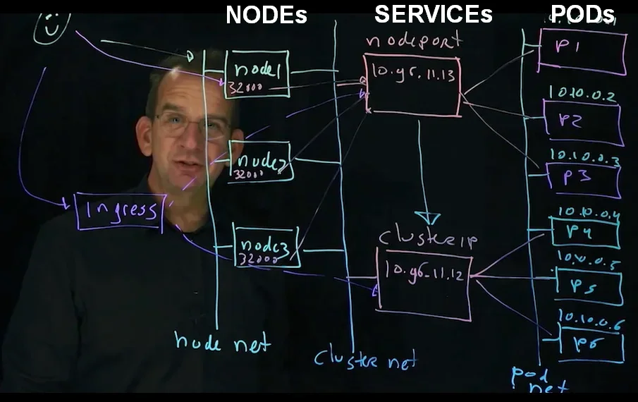
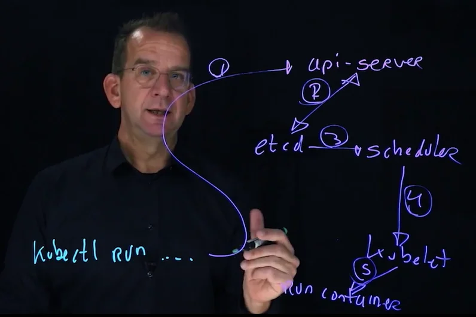

Certified Kubernetes Application Developer [CKAD] | LOG
Kubernetes.io/Docs | kubectl Cheat Sheet
- Module 1 : Container Fundamentals
- Lesson 1 : Understanding and Using Containers
- Lesson 2 : Managing Container Images
- Lesson 3 : Understanding Kubernetes
- Lesson 4 : Creating a Lab Environment
- Module 2 : Kubernetes Essentials
- Module 3 : Building and Exposing Scalable Applications
- Module 4 : Advanced CKAD Tasks
- Module 5 : Sample Exam
See /Books/IT/Containers/Kubernetes/
Lesson 4 : Creating a Lab Environment
TL;DR
Kubernetes clusters are built using two methods. The first by way of Docker Desktop's Kubernetes feature. The second through a Minikube installation at an AlmaLinux 8 distro of WSL 2. All course work is performed at the WSL 2 commandline in both cases.
Kubernetes.io : Install Tools
kubectlkindminikubekubeadm
Setup kubectl Completion
Help
kubectl completion bash -h
Configure Shell
# @ Current shell
source <(kubectl completion bash)
# @ All sessions
echo "source <(kubectl completion bash)" >> ~/.bashrc
# @ Alias
alias k=kubectl
complete -o default -F __start_kubectl k
The completion script uses redirect of process substition, which is not POSIX compliant, and so requires Bash setting "
set +o posix" else the script fails.# REDIRECT of PROCESS SUBSITITION: # STDOUT of command1 redirected to STDIN of command2. # Use where command2 takes STDIN argument, # and command1 writes file content to STDOUT. command2 < <(command1)
Kubernetes Cluster : Create by …
Here are two methods of making a K8s cluster for this course. Both create a single-node cluster, but are mutually incompatible; only one such cluster can be running on the machine. We start the course using the K8s cluster feature of Docker Desktop (Method 1) and then switch to a (Linux) Minikube cluster (Method 2). In both cases, we work from WSL2 commandline and use the K8s CLI tools installed there. We used the Ubuntu 18.04 LTS distro with cluster of Method 1, and the AlmaLinux 8 distro with cluster of Method 2.
1. K8s Cluster by Docker Desktop
Make a K8s cluster available @ WSL by enabling the Kubernetes feature in Settings GUI of Docker Desktop.
Inspect cluster
☩ kubectl cluster-info
Kubernetes control plane is running at https://kubernetes.docker.internal:6443
CoreDNS is running at https://kubernetes.docker.internal:6443/api/v1/namespaces/kube-system/services/kube-dns:dns/proxy
With Docker Desktop configured to launch a K8s cluster on startup, the course's
minikubemethod does not work because a cluster is already up.☩ kubectl get all NAME TYPE CLUSTER-IP EXTERNAL-IP PORT(S) AGE service/kubernetes ClusterIP 10.96.0.1 <none> 443/TCP 8d ☩ kubectl get nodes NAME STATUS ROLES AGE VERSION docker-desktop Ready control-plane 8d v1.25.9
Set Context to docker-desktop
☩ kubectl config use-context docker-desktop
Switched to context "docker-desktop".
☩ kubectl config get-contexts
CURRENT NAME CLUSTER AUTHINFO NAMESPACE
* docker-desktop docker-desktop docker-desktop
2. K8s Cluster by Minikube
Minikube is incompatible with the Kubernetes feature of Docker Desktop. Disable that feature before attempting this setup method.
Commands
# Create cluster
minikube start --driver=docker
# Set config param key/val : ~/.kube/config
minikube config set driver docker
# Manage cluster
minikube status|pause|unpause|stop|addons list
# Get version
minikube version
# Launch GUI
minikube dashboard
# Shell @ cluster VM
minikube ssh
# Teardown
minikube delete --all
Minikube @ AlmaLinux 8
Install
$ curl -LO https://storage.googleapis.com/minikube/releases/latest/minikube-linux-amd64 \
&& sudo install minikube-linux-amd64 /usr/local/bin/minikube
Verify install
$ minikube version
minikube version: v1.30.1
commit: 08896fd1dc362c097c925146c4a0d0dac715ace0
Create the cluster
$ minikube start # FAIL
#=> "Exiting due to DRV_UNSUPPORTED_OS... driver 'hyperv' is not supported..."
Try again, with driver explicitly set.
$ minikube start --driver=docker
- Losts of errors, but cluster created.
Seeminikube.start.log
Verify the cluster
$ minikube status
minikube
type: Control Plane
host: Running
kubelet: Running
apiserver: Running
kubeconfig: Configured
$ kubectl get po -A
NAMESPACE NAME READY STATUS RESTARTS AGE
kube-system coredns-787d4945fb-hpskz 1/1 Running 0 10m
kube-system etcd-minikube 1/1 Running 0 10m
kube-system kube-apiserver-minikube 1/1 Running 0 10m
kube-system kube-controller-manager-minikube 1/1 Running 0 10m
kube-system kube-proxy-h9tzt 1/1 Running 0 10m
kube-system kube-scheduler-minikube 1/1 Running 0 10m
kube-system storage-provisioner 1/1 Running 1 (10m ago) 10m
☩ kubectl get all -A
NAMESPACE NAME READY STATUS RESTARTS AGE
kube-system pod/coredns-787d4945fb-hpskz 1/1 Running 1 (7m9s ago) 18m
kube-system pod/etcd-minikube 1/1 Running 1 (7m14s ago) 18m
kube-system pod/kube-apiserver-minikube 1/1 Running 1 (7m13s ago) 18m
kube-system pod/kube-controller-manager-minikube 1/1 Running 1 (7m14s ago) 18m
kube-system pod/kube-proxy-h9tzt 1/1 Running 1 (7m14s ago) 18m
kube-system pod/kube-scheduler-minikube 1/1 Running 1 (7m14s ago) 18m
kube-system pod/storage-provisioner 1/1 Running 2 (7m14s ago) 18m
NAMESPACE NAME TYPE CLUSTER-IP EXTERNAL-IP PORT(S) AGE
default service/kubernetes ClusterIP 10.96.0.1 <none> 443/TCP 18m
kube-system service/kube-dns ClusterIP 10.96.0.10 <none> 53/UDP,53/TCP,9153/TCP 18m
NAMESPACE NAME DESIRED CURRENT READY UP-TO-DATE AVAILABLE NODE SELECTOR AGE
kube-system daemonset.apps/kube-proxy 1 1 1 1 1 kubernetes.io/os=linux 18m
NAMESPACE NAME READY UP-TO-DATE AVAILABLE AGE
kube-system deployment.apps/coredns 1/1 1 1 18m
NAMESPACE NAME DESIRED CURRENT READY AGE
kube-system replicaset.apps/coredns-787d4945fb 1 1 1 18m
Minikube Stop/Start
$ minikube cstop
$ minikube start
- Another batch of errors, but again the cluster starts.
Minikube Dashboard
$ minikube dashboard
� Enabling dashboard ...
▪ Using image docker.io/kubernetesui/dashboard:v2.7.0
▪ Using image docker.io/kubernetesui/metrics-scraper:v1.0.8
� Some dashboard features require the metrics-server addon. To enable all features please run:
minikube addons enable metrics-server
� Verifying dashboard health ...
� Launching proxy ...
� Verifying proxy health ...
� Opening http://127.0.0.1:43295/api/v1/namespaces/kubernetes-dashboard/services/http:kubernetes-dashboard:/proxy/ in your default browser...
� http://127.0.0.1:43295/api/v1/namespaces/kubernetes-dashboard/services/http:kubernetes-dashboard:/proxy/
- Launch apps and such from GUI
Manage @ CLI
$ kubectl get all
NAME READY STATUS RESTARTS AGE
pod/app1-7f649c7bfb-42695 1/1 Running 0 4m1s
pod/app1-7f649c7bfb-6nms9 1/1 Running 0 4m1s
pod/app1-7f649c7bfb-ghnsg 1/1 Running 0 4m1s
NAME TYPE CLUSTER-IP EXTERNAL-IP PORT(S) AGE
service/app1 ClusterIP 10.108.127.161 <none> 80/TCP 4m1s
service/kubernetes ClusterIP 10.96.0.1 <none> 443/TCP 31m
NAME READY UP-TO-DATE AVAILABLE AGE
deployment.apps/app1 3/3 3 3 4m1s
NAME DESIRED CURRENT READY AGE
replicaset.apps/app1-7f649c7bfb 3 3 3 4m1s
Launch SSH (shell) into minikube VM as docker user : docker@minikube
$ minikube ssh
Inspect VM's network
docker@minikube:~$ ip -4 addr
1: lo: <LOOPBACK,UP,LOWER_UP> mtu 65536 qdisc noqueue state UNKNOWN group default qlen 1000
inet 127.0.0.1/8 scope host lo
valid_lft forever preferred_lft forever
2: docker0: <NO-CARRIER,BROADCAST,MULTICAST,UP> mtu 1500 qdisc noqueue state DOWN group default
inet 172.18.0.1/16 brd 172.18.255.255 scope global docker0
valid_lft forever preferred_lft forever
3: bridge: <BROADCAST,MULTICAST,UP,LOWER_UP> mtu 1500 qdisc noqueue state UP group default qlen 1000
inet 10.244.0.1/16 brd 10.244.255.255 scope global bridge
valid_lft forever preferred_lft forever
10: eth0@if11: <BROADCAST,MULTICAST,UP,LOWER_UP> mtu 1500 qdisc noqueue state UP group default link-netnsid 0
inet 172.17.0.2/16 brd 172.17.255.255 scope global eth0
valid_lft forever preferred_lft forever
docker@minikube:~$ ip route
default via 172.17.0.1 dev eth0
10.244.0.0/16 dev bridge proto kernel scope link src 10.244.0.1
172.17.0.0/16 dev eth0 proto kernel scope link src 172.17.0.2
172.18.0.0/16 dev docker0 proto kernel scope link src 172.18.0.1 linkdown
Docker Engine is running inside the minikube VM
docker@minikube:~$ docker image ls
REPOSITORY TAG IMAGE ID CREATED SIZE
nginx latest eb4a57159180 2 weeks ago 187MB
registry.k8s.io/kube-apiserver v1.26.3 1d9b3cbae03c 3 months ago 134MB
registry.k8s.io/kube-controller-manager v1.26.3 ce8c2293ef09 3 months ago 123MB
registry.k8s.io/kube-scheduler v1.26.3 5a7904736932 3 months ago 56.4MB
registry.k8s.io/kube-proxy v1.26.3 92ed2bec97a6 3 months ago 65.6MB
registry.k8s.io/etcd 3.5.6-0 fce326961ae2 7 months ago 299MB
registry.k8s.io/pause 3.9 e6f181688397 8 months ago 744kB
kubernetesui/dashboard <none> 07655ddf2eeb 9 months ago 246MB
kubernetesui/metrics-scraper <none> 115053965e86 13 months ago 43.8MB
registry.k8s.io/coredns/coredns v1.9.3 5185b96f0bec 13 months ago 48.8MB
gcr.io/k8s-minikube/storage-provisioner v5 6e38f40d628d 2 years ago 31.5MB
Teardown
$ kubectl delete deploy app1
deployment.apps "app1" deleted
$ kubectl get all
NAME TYPE CLUSTER-IP EXTERNAL-IP PORT(S) AGE
service/app1 ClusterIP 10.108.127.161 <none> 80/TCP 13m
service/kubernetes ClusterIP 10.96.0.1 <none> 443/TCP 40m
$ kubectl delete svc app1
service "app1" deleted
$ kubectl get all
NAME TYPE CLUSTER-IP EXTERNAL-IP PORT(S) AGE
service/kubernetes ClusterIP 10.96.0.1 <none> 443/TCP 42m
Minikube @ Windows CMD (choco)
Make a K8s cluster @ CMD; cluster and CLI tools available only to Windows commandline. No course work was performed using this method.
Install
With Docker Desktop configured so its Kubernetes feature is disabled, we can create and manage a K8s cluster from Windows command line using the course method (
minikube) of launching a cluster.Kubernetes tools were already installed on this machine at both Windows CMD and WSL.
Update minikube, kubectl, etal
# choco upgrade minikube -y
# choco upgrade kubernetes-cli -y
...
# minikube version
minikube version: v1.30.1
Run minikube @ CMD
Start a cluster : minikube start
# minikube start
* minikube v1.30.1 on Microsoft Windows 10 Pro 10.0.19044.2965 Build 19044.2965
- MINIKUBE_HOME=C:\Users\X1
* Using the hyperv driver based on existing profile
* Starting control plane node minikube in cluster minikube
* Updating the running hyperv "minikube" VM ...
* Preparing Kubernetes v1.26.3 on Docker 20.10.23 ...
* Configuring bridge CNI (Container Networking Interface) ...
* Verifying Kubernetes components...
- Using image gcr.io/k8s-minikube/storage-provisioner:v5
* Enabled addons: default-storageclass, storage-provisioner
* Done! kubectl is now configured to use "minikube" cluster and "default" namespace by default
Note this setup does not allow for operating @ WSL:
☩ minikube start
� minikube v1.30.1 on Ubuntu 18.04
❌ Exiting due to DRV_UNSUPPORTED_OS: The driver 'hyperv' is not supported on linux/amd64
Back to Window CMD …
Get cluster info
# minikube status
minikube
type: Control Plane
host: Running
kubelet: Running
apiserver: Running
kubeconfig: Configured
# kubectl cluster-info
Kubernetes control plane is running at https://192.168.0.64:8443
CoreDNS is running at https://192.168.0.64:8443/api/v1/namespaces/kube-system/services/kube-dns:dns/proxy
To further debug and diagnose cluster problems, use 'kubectl cluster-info dump'.
Get pod info
# kubectl get po -A
NAMESPACE NAME READY STATUS RESTARTS AGE
kube-system coredns-787d4945fb-c7jmj 1/1 Running 3 (3m49s ago) 161m
kube-system etcd-minikube 1/1 Running 2 (3m50s ago) 161m
kube-system kube-apiserver-minikube 1/1 Running 2 (3m49s ago) 161m
kube-system kube-controller-manager-minikube 1/1 Running 2 (3m49s ago) 161m
kube-system kube-proxy-cf6vs 1/1 Running 2 (3m48s ago) 161m
kube-system kube-scheduler-minikube 1/1 Running 3 (3m48s ago) 161m
kube-system storage-provisioner 1/1 Running 4 (3m50s ago) 161m
Deploy an app
# kubectl create deployment hello-minikube --image=kicbase/echo-server:1.0
deployment.apps/hello-minikube created
# kubectl expose deployment hello-minikube --type=NodePort --port=8080
service/hello-minikube exposed
Get app service info
# minikube service hello-minikube
|-----------|----------------|-------------|---------------------------|
| NAMESPACE | NAME | TARGET PORT | URL |
|-----------|----------------|-------------|---------------------------|
| default | hello-minikube | 8080 | http://192.168.0.64:30185 |
|-----------|----------------|-------------|---------------------------|
* Opening service default/hello-minikube in default browser...
- This command has
minikubelaunch a browser that requests the service endpoint.
Hit the endpoint using cURL
# curl http://192.168.0.64:30185
Request served by hello-minikube-77b6f68484-wn5gr
HTTP/1.1 GET /
Host: 192.168.0.64:30185
Accept: */*
User-Agent: curl/8.0.1
Else simply validate that service (NO EXTERNAL ACCESS) using kubectl .
# kubectl get services hello-minikube
NAME TYPE CLUSTER-IP EXTERNAL-IP PORT(S) AGE
hello-minikube NodePort 10.107.134.245 <none> 8080:30185/TCP 25s
Expose a port externally and launch a server process
# kubectl port-forward service/hello-minikube 7080:8080
Forwarding from 127.0.0.1:7080 -> 8080
Forwarding from [::1]:7080 -> 8080
Handling connection for 7080
- Service @
http://localhost:7080/
Delete the cluster
# minikube status
minikube
type: Control Plane
host: Running
kubelet: Running
apiserver: Running
kubeconfig: Configured
# minikube stop
* Stopping node "minikube" ...
* Powering off "minikube" via SSH ...
* 1 node stopped.
# minikube status
minikube
type: Control Plane
host: Stopped
kubelet: Stopped
apiserver: Stopped
kubeconfig: Stopped
# minikube delete
* Stopping node "minikube" ...
* Deleting "minikube" in hyperv ...
* Removed all traces of the "minikube" cluster.
Lesson 5 : Managing Pod Basic Features
Exploring Essential API Resources
Kubernetes APIs provide different resources to run applications in a cloud-native environment:
# List all API resources
kubectl api-resources |less
Deployment: Represents tha deployed app.ReplicaSet: Manages scaleability; app replicas (instances).Pods: Adds features required to run the app (container) in the cloud.
ConfigMapSecretsPersistentVolumes
(See Kubernetes .)
kubectl : Get Command-Usage Info
kubectl $_ANY_K8s_COMMAND -h |less
- That (
-h) is a very useful option, esp. on cert exam; returns brief description AND example usage.
Create a naked pod
Run a Pod sans Deployment. Bad idea; does not reschedule upon Pod's demise, regardless of cause; delete command or (node or other) failure.
E.g., run an app (NGINX) as a naked pod, and then delete it to verify that it does not reschedule (respawn).
# Run app as a NAKED POD
☩ kubectl run nginx --image=nginx
pod/nginx created
☩ kubectl get pods nginx # -o json|yaml # for full description
NAME READY STATUS RESTARTS AGE
nginx 1/1 Running 0 38s
# Inspect
☩ kubectl get all
NAME READY STATUS RESTARTS AGE
pod/nginx 1/1 Running 0 2m22s
NAME TYPE CLUSTER-IP EXTERNAL-IP PORT(S) AGE
service/kubernetes ClusterIP 10.96.0.1 <none> 443/TCP 8d
# Delete the app
☩ kubectl delete pod nginx
pod "nginx" deleted
# Verify that it is not respawning (since it is not a deployment)
☩ kubectl get all
NAME TYPE CLUSTER-IP EXTERNAL-IP PORT(S) AGE
service/kubernetes ClusterIP 10.96.0.1 <none> 443/TCP 8d
Create a depoyment
# Client utility
kubectl
kubectl $command -h |less
# Deploy an application (imperatively)
kubectl create deploy $appName --image $appImage --replicas 3
# Deploy declaratively : per manifest (YAML)
## Create if exist else update resource
kubectl apply deploy -f app.yaml
## Replace resource
kubectl replace deploy -f app.yaml
Generate the manifest (YAML)
For any single-container pod
# Generate YAML (only at single-container pod)
kubectl run $appName --image=$appImage -o yaml --dry-run=client > $appYAML
##... add custom run command : `-- ...` MUST BE LAST ARG(s)
kubectl run $appName --image=$appImage \
--dry-run=client -o yaml -- sleep 3600 > $appYAML
## Generate YAML per DOCs : kubernetes.io/docs : pods (sample YAML)
Single vs. Multi container pods
- Multi-container pods do not allow for YAML generation; must create the YAML config manually.
- Single-container pods are preferred. They are the standard.
Almost always deploy in single-container pods.
- Exceptions:
- Sidecar; enhances primary container, e.g., monitoring, logging, synching.
- Ambassador; represents the primary to outside world, e.g., reverse proxy.
- Adapter; modifies traffic or data pattern of primary to match requirements of other apps in cluster.
initContainers; specialized containers that run before app containers in a Pod. Init containers can contain utilities or setup scripts not present in an app image.- Init containers always run to completion.
- Each init container must complete successfully before the next one starts.
init-example1.yaml
- Exceptions:
Example multi-container pod:
apiVersion: v1
kind: Pod
metadata:
name: multicontainer
spec:
containers:
- name: busybox
image: busybox
command:
- sleep
- "3600"
- name: nginx
image: nginx
Multi-container Pods
Atypical; use only under certain patterns
Sidecar Pattern
sidecar.yaml
A main app (app) and an app server (sidecar).
kubectl create -f sidecar.yaml
# Shell into sidecar container (the server)
kubectl exec -it sidecar-pod -c sidecar /bin/bash # Depricated
kubectl exec -it sidecar-pod -c sidecar -- /bin/bash # Use this syntax
The
--separates the kubectl command args from the shell arguments# Silly to hit server from itself, but install and run curl anyway ... [root@sidecar-pod /]# yum install -y curl ... [root@sidecar-pod /]# curl http://localhost/date.txt Fri Jun 2 15:29:23 UTC 2023 Fri Jun 2 15:29:33 UTC 2023 Fri Jun 2 15:29:43 UTC 2023 Fri Jun 2 15:29:53 UTC 2023 Fri Jun 2 15:30:03 UTC 2023
Init Containers
A Pod can have multiple containers running apps within it, but it can also have one or more init containers, which are run before the app containers are started.
Init containers are exactly like regular containers, except:
- Init containers always run to completion.
- Each init container must complete successfully before the next one starts.
Namespaces
Resource isolation (security). Based on Linux namespaces. Can think of namespaces as directories. Apply different security settings
- RBAC (fine-grain access control)
Quota (limit resources)
# Create kubectl create ns $ns # Work in a specified namespace kubectl ... -n $ns # See ALL resources of ALL namespaces kubectl get all -A # Equiv: --all-namespaces # See default namespaces kubectl get nsThere is a
kubectlcommand to declare a current namespace, but that is not advised for exam. Rather set per command using the-n $nsoption.
Get "all" objects of default (or whatever is current) namespace:
☩ kubectl get all
NAME READY STATUS RESTARTS AGE
pod/mdb 1/1 Running 0 46m
NAME TYPE CLUSTER-IP EXTERNAL-IP PORT(S) AGE
service/kubernetes ClusterIP 10.96.0.1 <none> 443/TCP 19d
Get "all" objects of all namespaces:
☩ kubectl get all -A
NAMESPACE NAME READY STATUS RESTARTS AGE
default pod/mdb 1/1 Running 0 46m
kube-system pod/coredns-565d847f94-krqgj 1/1 Running 5 (82m ago) 19d
kube-system pod/coredns-565d847f94-vvmcc 1/1 Running 5 (82m ago) 19d
kube-system pod/etcd-docker-desktop 1/1 Running 5 (82m ago) 19d
kube-system pod/kube-apiserver-docker-desktop 1/1 Running 5 (82m ago) 19d
kube-system pod/kube-controller-manager-docker-desktop 1/1 Running 5 (82m ago) 19d
kube-system pod/kube-proxy-jkfcp 1/1 Running 5 (82m ago) 19d
kube-system pod/kube-scheduler-docker-desktop 1/1 Running 5 (82m ago) 19d
kube-system pod/storage-provisioner 1/1 Running 16 (82m ago) 19d
kube-system pod/vpnkit-controller 1/1 Running 239 (3m43s ago) 19d
NAMESPACE NAME TYPE CLUSTER-IP EXTERNAL-IP PORT(S) AGE
default service/kubernetes ClusterIP 10.96.0.1 <none> 443/TCP 19d
kube-system service/kube-dns ClusterIP 10.96.0.10 <none> 53/UDP,53/TCP,9153/TCP 19d
NAMESPACE NAME DESIRED CURRENT READY UP-TO-DATE AVAILABLE NODE SELECTOR AGE
kube-system daemonset.apps/kube-proxy 1 1 1 1 1 kubernetes.io/os=linux 19d
NAMESPACE NAME READY UP-TO-DATE AVAILABLE AGE
kube-system deployment.apps/coredns 2/2 2 2 19d
NAMESPACE NAME DESIRED CURRENT READY AGE
kube-system replicaset.apps/coredns-565d847f94 2 2 2 19d
Lesson 6 : Managing Pod Advanced Features
Exploring Pod State
# Examine Pods
## Describe : pod : get the pod info stored in etcd database
kubectl describe pod $podName # -o json|yaml |less
## Describe : any object
kubectl describe ns secret1
kubectl describe pods $podName
### Containers:
### ...
### State: Waiting
### Reason: PodInitializing
### Events:
## Explain : (sub)field(s) from `kubernetes describe ... -o yaml`
kubectl explain $_OBJECT.$_FIELD.$_SUB_FIELD
kubectl explain pod.metadata
kubectl explain pod.spec.containers.volumeMounts
## Connect : launch shell into container
kubectl exec -it $podName -- sh # /bin/bash instead of sh, if available
@ container
## Examining a container, if ps not available, use Linux /proc FS
cd /proc
ls # the listing includes PID numbers
cat 1/cmdline # to examine the process
exit # if shell NOT @ PID 1
CTRL p;CTRL q # if shell @ PID 1
Pod Troubleshooting
Troubleshooting workflow/skills are significant part of the CKAD exam.
Exploring Pod Logs
kubectl run mdb --image=mariadb
Monitor the startup process:
kubectl get pods
NAME READY STATUS RESTARTS AGE
mdb 0/1 ContainerCreating 0 11s
kubectl get pods
NAME READY STATUS RESTARTS AGE
mdb 0/1 Error 3 22s
kubectl get pods
NAME READY STATUS RESTARTS AGE
mdb 0/1 CrashLoopBackOff 1 (13s ago) 35s
# Look for current and last state
kubectl describe pod $podName
Name: mdb
Namespace: default
...
Containers:
mdb:
Container ID: docker://64516a1f73db808e553a2b61113bc777bf42c912
Image: mariadb
Image ID: docker-pullable://mariadb@sha256:b11a86131ac592ea
...
State: Waiting <--- Current State
Reason: CrashLoopBackOff
Last State: Terminated <--- Last State
Reason: Error
Exit Code: 1 <--- Application's Exit Code
Reason: CrashLoopBackOff- This means the primary app did not start successfully.
- K8s default restart policy is "always". Hence the repeated crash loop.
Exit Code: 1That code is of the application itself, so something went wrong in there. So look at logs. If the code is
0, then the application ended without error, and theCrashLoopis just K8s recurringly attempting to restart it.kubectl logs mdb2023-06-09 19:51:11+00:00 [Note] [Entrypoint]: Entrypoint script for MariaDB Server 1:10.11.3+maria~ubu2204 started. 2023-06-09 19:51:12+00:00 [Note] [Entrypoint]: Switching to dedicated user 'mysql' 2023-06-09 19:51:12+00:00 [Note] [Entrypoint]: Entrypoint script for MariaDB Server 1:10.11.3+maria~ubu2204 started. 2023-06-09 19:51:12+00:00 [ERROR] [Entrypoint]: Database is uninitialized and password option is not specified You need to specify one of MARIADB_ROOT_PASSWORD, MARIADB_ROOT_PASSWORD_HASH, MARIADB_ALLOW_EMPTY_ROOT_PASSWORD and MARIADB_RANDOM_ROOT_PASSWORD
So, rerun with the required environment injected:
kubectl run mdb --image=mariadb --env MARIADB_ROOT_PASSWORD=password
kubectl get pods
NAME READY STATUS RESTARTS AGE
mdb 1/1 Running 0 5s
- Success!
Port Forwarding
Use for troubleshooting only.
kubectl port-forward fwngx 8080:80 &
- Expose
podport80tolocalhost:8080
Use to troubleshoot an NGINX pod
alias k=kubectl
k run fwngx --image=nginx
k get pods
fwngx 1/1 Running 0 2m15s
k get pods -o wide
NAME READY STATUS RESTARTS AGE IP NODE NOMINATED NODE READINESS GATES
fwngx 1/1 Running 0 2m20s 10.1.0.112 docker-desktop <none> <none>
IP is the pod's listening address
NOT accessible from outside the cluster. The cluster network is orthogonal to that of host, much like Docker (swarm).
curl 10.1.0.112curl: (7) Failed to connect to 10.1.0.112 port 80: Connection timed out
So, make the pod accessible using this troubleshooting method (port forwarding).
kubectl port-forward fwngx 8080:80 &
curl -I localhost:8080
Handling connection for 8080
HTTP/1.1 200 OK
Server: nginx/1.25.0
Date: Fri, 09 Jun 2023 21:59:07 GMT
Content-Type: text/html
Content-Length: 615
Last-Modified: Tue, 23 May 2023 15:08:20 GMT
Connection: keep-alive
ETag: "646cd6e4-267"
Accept-Ranges: bytes
Terminate the port-forward process
fg # Bring the last background process to the foreground
CTRL-C # End the process.
Security Context
Configure for a Pod or Container
- Defines privilege and access control settings for Pod or Container, incl:
- Discretionary Access Control; permissions used to access an object, based on
UID/GID, much like file access. - SELinux; objects are assigned security labels.
- AppArmor; alt to SELinux
- Running as (un)privileged user.
- Using Linux capabilities
AllowPrivilegeEscalation; use program profiles to restrict program capabilities; controls whether a process can gain more privileges than its parent.
- Discretionary Access Control; permissions used to access an object, based on
To get more detailed info, use ...
kubectl explain
Security Context may prevent pod from running. Some image configurations are incompatible with some Security Context settings.
To get additional info from the events, ...
kubectl describe
And for even more in depth info, use ...
kubectl logs $podName
See securitycontextdemo.yaml | securitycontextdemo2.yaml
Jobs | spec.ttlSecondsAfterFinished
Jobs are one-shot tasks like backup, calculation, batch processing and such. Normally, Pods run forever. To create a Pod that runs up to completion, use Jobs instead.
Automatic Cleanup per spec.ttlSecondsAfterFinished .
Three (3) Job Types
- Non-parallel Jobs : one Pod is started,
and Job ends as soon as Pod terminates successfully.
spec.completionsUNSET; default: 1spec.parallelismUNSET; default: 1
- Parallel Jobs : Job ends when a set number of completions occurs.
spec.completionsSET.
- Parallel Jobs with work queue : Pods must coordinate amongst themselves
or an external service to determine what each should work on.
spec.completionsUNSET; defaults tospec.parallelismspec.parallelismSET.
Use create
kubectl create -h |less
- Show everything we can
create
Job Workflow
# Create Job
kubectl create job j1 --image=busybox -- date
# Monitor Job status (to completion perhaps)
kubectl get jobs
kubectl get jobs
kubectl get jobs,pods
# Delete Job
kubectl delete jobs.batch j1
Create Job
jobName=j1
kubectl create job $jobName --image=busybox -- date # one-shot job
Monitor Job status
kubectl get jobs
NAME COMPLETIONS DURATION AGE
j1 0/1 2s 2s
kubectl get jobs
NAME COMPLETIONS DURATION AGE
j1 1/1 5s 7s
kubectl get jobs,pods
NAME COMPLETIONS DURATION AGE
job.batch/j1 1/1 5s 14s
NAME READY STATUS RESTARTS AGE
pod/j1-t99pw 0/1 Completed 0 14s
kubectl get pods $jobName-t99pw
NAME READY STATUS RESTARTS AGE
j1-t99pw 0/1 Completed 0 5m44s
Examine manifest (YAML) defining the Job; its restartPolicy
kubectl get pods $jobName-t99pw -o yaml |grep restartPolicy
restartPolicy: Never
Show that deleting a Job's Pod does NOT delete Job.
kubectl delete pods $jobName-t99pw
pod "j1-t99pw" deleted
kubectl get jobs
NAME COMPLETIONS DURATION AGE
j1 1/1 5s 10m
Delete Job
kubectl delete jobs $jobName # OR ... jobs.batch j1
job.batch "j1" deleted
- Note
jobs.batchreference.
Generate manifest (YAML) for a (generic) Job
Then edit it, and then create the job.
kubectl create job $jobName --image=busybox --dry-run=client -o yaml \
-- sleep 5 > ajob.yaml
- Edit
ajob.yamlto include injob.speccompletions: 3ttlSecondsAfterFinished: 60- Removes job @ specified seconds after completions.
Now run it:
kubectl create -f ajob.yaml
Monitor
kubectl get jobs,pods
- Recurringly; expect the job's Jobs object to self-delete +60 seconds after 3 completions.
CronJob
For performing regular scheduled actions. It runs a job periodically on a given schedule, written in Cron format.
- A single CronJob may create multiple concurrent Jobs.
- Creates new Job(s), per schedule, which start Pod(s).
- The
.metadata.nameof the CronJob is part of the basis for naming those Pods.- Must be a valid DNS subdomain value and no longer than 52 characters. (CronJob controller appends 11 chars, and DNS rule limit is 63 chars.)
Schedule syntax
# ┌───────────── minute (0 - 59)
# │ ┌───────────── hour (0 - 23)
# │ │ ┌───────────── day of the month (1 - 31)
# │ │ │ ┌───────────── month (1 - 12)
# │ │ │ │ ┌───────────── day of the week (0 - 6) (Sunday to Saturday;
# │ │ │ │ │ 7 is also Sunday on some systems)
# │ │ │ │ │ OR sun, mon, tue, wed, thu, fri, sat
# │ │ │ │ │
# * * * * *
- E.g.,
0 0 13 * 5states that the task must be started every Friday at midnight, as well as on the 13th of each month at midnight. - Note that * and ? are Wildcard equivalents.
Test a CronJob without waiting for scheduled execution; create a Job based on CronJob.
kubectl create job $jobName --from=cronjob/$cronJobName
Info
kubectl create cronjob -h |less
CronJob Workflow
cjName=cj1
# Create : schedule is every other minute, every hour, day, month, day of week
kubectl create cronjob $cjName --image=busybox --schedule="*/2 * * * *" \
-- echo greetings from your cluster
# Test
kubectl create job cjtest --from=cronjob/$cjName
# Monitor
kubectl get cronjobs,jobs,pods
# Examine
kubectl logs $cjName-28106124-h526d # -JOB-POD values obtained from prior command
# Teardown
kubectl delete cronjobs.batch $cjName
Summary/performance
kubectl get cronjobs,jobs,pods
NAME SCHEDULE SUSPEND ACTIVE LAST SCHEDULE AGE
cronjob.batch/cj1 */2 * * * * False 0 76s 7m38s
NAME COMPLETIONS DURATION AGE
job.batch/cj1-28106124 1/1 5s 5m16s
job.batch/cj1-28106126 1/1 5s 3m16s
job.batch/cj1-28106128 1/1 4s 76s
job.batch/cjtest 1/1 5s 3m29s
NAME READY STATUS RESTARTS AGE
pod/cj1-28106124-h526d 0/1 Completed 0 5m16s
pod/cj1-28106126-6967t 0/1 Completed 0 3m16s
pod/cj1-28106128-qktls 0/1 Completed 0 76s
pod/cjtest-tv7xm 0/1 Completed 0 3m29s
Resource Limitations & Quota
Setting quotas without setting resource limts causes failure. Whatever quota is set (on a namespace), a resource limit for that MUST ALSO be set on the affected resource(s).
kubectl create quota ... -n $ns
- Restrictions applied to namespaces
- Apps thereunder MUST have resource requests and limits.
Resource Limitations
kubectl set resources ...
- Applied to Pods and Containers
- Request: initial request for a resource
- Limits: Upper threshold of a resource
- Resource requests and limts are set as application properties.
- Memory/CPU requests and limits
pod.spec.containers.resources- UNITS:
millicoreAKAmillicpu: 1/1000 of CPU500 millicoreis 0.5 CPU
- UNITS:
kube-schedulerhandles resource requests; available resources per node.Status: pending— resource limits cannot be schedules (not available).
- Memory/CPU requests and limits
See Resource Management for Pods and Containers
Demo : Running a Pod with Limitations
☩ k apply -f frontend-resources.yaml
frontend-resources.yamlalias k=kubectl☩ k get pods NAME READY STATUS RESTARTS AGE frontend 1/2 OOMKilled 3 (42s ago) 2m17sOOMis Out Of Memory☩ k describe pod frontend Name: frontend Namespace: default ... Containers: db: Container ID: docker://3a76633894... Image: mysql ... State: Waiting Reason: CrashLoopBackOff Last State: Terminated Reason: OOMKilled Exit Code: 137 ... Limits: cpu: 500m memory: 128Mi Requests: cpu: 250m memory: 64Mi ... wp: Container ID: docker://2a0737afb3... Image: wordpress ...
So delete, edit, and then redeploy
☩ k delete -f frontend-resources.yaml
pod "frontend" deleted
☩ cp frontend-resources.yaml frontend-resources-e1.yaml
☩ vim frontend-resources-e1.yaml
☩ k apply -f frontend-resources-e1.yaml
☩ k get pods
NAME READY STATUS RESTARTS AGE
frontend 2/2 Running 0 5s
- Success !
Resource Quotas
kubectl create quota ... -n $ns
- Restrictions applied to namespaces
- Apps thereunder MUST have resource requests and limits.
Demo : Using Quota
Hint: Setting quotas without setting resource limts causes failure.
Workflow
ns=restricted
k create ns $ns
# Quotas applied to namespace
k create quota -h |less
k create quota q1 -n $ns --hard=cpu=2,memory=1G,pods=3
k describe ns $ns
k run pods rp1 --image=nginx -n $ns # Will fail
# Resource Limits applied to resources (deployment)
dname=$ns
k create deploy $dname --image=nginx -n $ns
k set resources -n $ns deploy $dname \
--limits=cpu=200m,memory=128M \
--requests=cpu=100m,memory=64M
k get all -h $ns
Work ...
☩ k create quota q1 -n $ns --hard=cpu=2,memory=1G,pods=3
resourcequota/q1 created
☩ k describe ns $ns
Name: restricted
Labels: kubernetes.io/metadata.name=restricted
Annotations: <none>
Status: Active
Resource Quotas
Name: q1
Resource Used Hard
-------- --- ---
cpu 0 2
memory 0 1G
pods 0 3
# Try running sans resource limits on pod : FAIL
☩ k run pods rp1 --image=nginx -n $ns
Error from server (Forbidden): pods "pod" is forbidden: failed quota: q1: must specify cpu for: pod; memory for: pod
This time, create a deployment (instead of Naked Pod):
# Create deployment
☩ dname=restricted
☩ k create deploy $dname --image=nginx -n $ns
deployment.apps/restricted created
# Verify : FAILing
☩ k get all -n $ns
NAME READY UP-TO-DATE AVAILABLE AGE
deployment.apps/restricted 0/1 0 0 2m2s
NAME DESIRED CURRENT READY AGE
replicaset.apps/restricted-566b795f6f 1 0 0 47s
replicaset.apps/restricted-67f5569ccb 1 0 0 2m2s
Why is it failing? (READY: 0/1)
Describe deployment:
☩ kubectl describe -n $ns deployments.app
Name: restricted
...
Conditions:
Type Status Reason
---- ------ ------
Progressing True NewReplicaSetCreated
Available False MinimumReplicasUnavailable
ReplicaFailure True FailedCreate
OldReplicaSets: restricted-67f5569ccb (0/1 replicas created)
NewReplicaSet: restricted-566b795f6f (0/1 replicas created)
Events:
Type Reason Age From Message
---- ------ ---- ---- -------
Normal ScalingReplicaSet 4m53s deployment-controller Scaled up replica set restricted-67f5569ccb to 1
Reason: MinimumReplicasUnavailable- The replicas needed to scale (to one instance) are unavailable, but why?
Describe ReplicaSet; the last one @ k get all ...
☩ kubectl describe -n $ns replicaset restricted-67f5569ccb
Name: restricted-67f5569ccb
...
Conditions:
Type Status Reason
---- ------ ------
ReplicaFailure True FailedCreate
Events:
Type Reason Age From Message
---- ------ ---- ---- -------
Warning FailedCreate 11m replicaset-controller Error creating: pods "restricted-67f5569ccb-lpn6c" is forbidden: failed quota: q1: must specify cpu for: nginx; memory for: nginx
...
- Quota was set, but we forgot to set Resource Limits, making replicas "unavailable".
... must specify cpu for: nginx; memory for: nginx
So let's set resource limits:
# Set resource limits
☩ k set resources deploy -h |less
☩ k set resources -n $ns deploy $dname \
> --limits=cpu=200m,memory=128M \
> --requests=cpu=100m,memory=64M
deployment.apps/restricted resource requirements updated
Verify this solved the problem:
☩ k get all -n $ns
NAME READY STATUS RESTARTS AGE
pod/restricted-746ff878cb-qj246 1/1 Running 0 104s
NAME READY UP-TO-DATE AVAILABLE AGE
deployment.apps/restricted 1/1 1 1 27m
NAME DESIRED CURRENT READY AGE
replicaset.apps/restricted-566b795f6f 0 0 0 26m
replicaset.apps/restricted-67f5569ccb 0 0 0 27m
replicaset.apps/restricted-746ff878cb 1 1 1 104s
replicaset.apps/restricted-df688c77 0 0 0 8m47s
- Success !
Cleaning up Resources
☩ k delete pods,deployments --all
pod "restricted-746ff878cb-qj246" deleted
deployment.apps "restricted" deleted
Lesson 7 : Managing Deployments
Deployment is the most common of Workload Resources. A Deployment provides declarative updates for Pods and ReplicaSets.
The User/Client declares the desired state of a Deployment, and the Deployment Controller changes the actual state to the desired state at a controlled rate.
Deployment (APIVERSION: apps/v1 extension) was not in early version of K8s (APIVERSION: v1). Those versions used ReplicationController and such to manage Pods.
See …
☩ kubectl api-resources |less
List APIs/versions available in current build:
☩ kubectl api-versions
# Check if specific apiVersion (@ YAML) exists
☩ kubectl api-versions |grep 'apps/v1beta1'
7.1 : Understanding Deployments
- Deployments are the standard for running apps on K8s
- Offers Scalability and Reliability
- Updates and Update strategies; zero down-time (RollingUpdate).
- Deployment spawns ReplicaSet, which starts Pods.
- Pods are managed by ReplicaSets.
- ReplicaSets are managed by Deployment.
- ReplicaSets allow for Rolling Updates and such.
Create a Deployment
Workflow
kubectl create deploy $dname --image=$iname --replicas=3
kubectl describe deploy $dname
kubectl get all
# Show that a Pod of a Deployment respawns
kubectl delete pod $dname-POD-CTNR # POD,CTNR read from ... get all.
Deploy
☩ dname=ngx
☩ iname=nginx
☩ kubectl create deploy $dname --image=$iname --replicas=3
deployment.apps/ngx created
☩ k describe deployments.apps $dname
Name: ngx
Namespace: default
CreationTimestamp: Sat, 10 Jun 2023 18:03:25 -0400
Labels: app=ngx
Annotations: deployment.kubernetes.io/revision: 1
Selector: app=ngx
Replicas: 3 desired | 3 updated | 3 total | 3 available | 0 unavailable
StrategyType: RollingUpdate
MinReadySeconds: 0
RollingUpdateStrategy: 25% max unavailable, 25% max surge
Pod Template:
Labels: app=ngx
Containers:
nginx:
Image: nginx
Port: <none>
Host Port: <none>
Environment: <none>
Mounts: <none>
Volumes: <none>
Conditions:
Type Status Reason
---- ------ ------
Available True MinimumReplicasAvailable
Progressing True NewReplicaSetAvailable
OldReplicaSets: <none>
NewReplicaSet: ngx-54bc5d4948 (3/3 replicas created)
Events:
Type Reason Age From Message
---- ------ ---- ---- -------
Normal ScalingReplicaSet 44s deployment-controller Scaled up replica set ngx-54bc5d4948 to 3
7.2 : Managing Deployment Scalability
kubectl create deploy ... --replicas=3
kubectl scale deployment $dname --replicas=4
Deploy
Demo @ Invalid apiVersion
Here, the manifest file (redis-deploy.obsolete.yaml) declares an invalid API version, so the deployment fails.
☩ kubectl create -f redis-deploy.obsolete.yaml
error: resource mapping not found for name: "redis" namespace: "" from "redis-deploy.yaml": no matches for kind "Deployment" in version "apps/v1beta1"
ensure CRDs are installed first
# Validate that apiVersion does NOT exist
☩ kubectl api-versions |grep 'apps/v1beta1'
The deployment's manifest file (redis-deploy.obsolete.yaml) declares an obsolete API version; does not exist in current K8s build.
apiVersion: apps/v1beta1
Edit using kubectl editor; vi syntax; however, does not allow edit of all params. E.g., can't change namespace using it.
☩ kubectl edit deployments.apps redis
Demo : Deploy @ Valid apiVersion
☩ kubectl create -f redis-deploy.yaml
deployment.apps/redis created
Use Label to filter "... get all"; show only those objects so labelled:
☩ k get all --selector app=redis
NAME READY STATUS RESTARTS AGE
pod/redis-6467896d84-945g7 1/1 Running 0 13m
pod/redis-6467896d84-swrh8 1/1 Running 0 11m
NAME READY UP-TO-DATE AVAILABLE AGE
deployment.apps/redis 2/2 2 2 13m
NAME DESIRED CURRENT READY AGE
replicaset.apps/redis-6467896d84 2 2 2 13m
- Success !
7.3 : Understanding Deployment Updates
Deployments allow for zero-downtime app updates.
Set any new property of a Deployment:
kubectl set ...
- Each such command spawns a new ReplicaSet.
- Pods with new properties are started in new ReplicaSet.
- The prior ReplicaSet is retained, to allow for Rollback.
- Unused ReplicaSet (revisions) may be deleted; nominally kept per param:
deployment.spec.revisionHistoryLimit(default:10)
Demo : Applying Application Updates
Default Update Strategy is RollingUpdate (zero down-time)
Workflow
dname=ngx
kubectl create deploy $dname --image nginx:1.14
kubectl get all --selctor app=$dname
kubctl set image deploy $dname nginx=nginx:1.17
kubectl get all --selctor app=$dname
- This leaves an empty, old ReplicaSet.
7.4 Understanding Labels Selectors and Annotations
Labels
Labels are abundant in K8s. Deployments and Services use Label Selectors to interconnect related resources. Deployment finds Pods using Label Selector. Service finds endpoint Pods using Label Selector. Users can manually set Label to facilitate resource management and selection.
# Label : Add
kubectl label deployment $dname k1=v1
# Label : Modify
kubectl label deployment $dname k1=vZ --overwrite=true
# Label : Delete
kubectl label deployment $dname k1-
"metadata": {
"labels": {
"key1" : "val1",
"key2" : "val2"
}
}
- Labels are
k-vpairs that are attached to objects such.- Can be created and modified anytime.
- See Syntax
- Max 63 characters
- Begin and end with alphanum ([a-z0-9A-Z])
- May contain dashes (
-), underscores (_), dots (.).
- Each Key must be unique for a given object,
yet many objects typically have common label(s), e.g., "
env: dev". - Specify identifying attributes of objects
- Used to organize and to select subsets of objects.
- Allow for efficient queries and watches
- Ideal for use in UIs and CLIs.
- Allow for efficient queries and watches
- Optional prefix (slash delimited); must be DNS subdomain (max 253 chars)
- Sans prefix, a label key is "presumed private to user".
- Some prefixes are reserved:
kubernetes.io/,k8s.io/
- Labels added to end-user objects by automated system components (e.g.
kube-scheduler,kube-controller-manager,kube-apiserver,kubectl, or other third-party automation) must specify a prefix.
Auto-created Labels
@ Deployment: Upon any
kubectl create ..., Deployment attaches Labelapp=<APP_NAME>to its Pod(s).@ Naked Pod: Upon any
kubectl run ..., Pod has labelrun=<POD_NAME>attached. (Not that important because such pods are not related to any other object.)
Demo : Labels
# Create Depployments
☩ k create deploy d1 --image=nginx
deployment.apps/d1 created
☩ k create deploy d2 --image=busybox -- sleep 1d
deployment.apps/d2 created
# Label Deployments (does NOT attach to its Pods)
☩ k label deployment d1 k1=v1
deployment.apps/d1 labeled
☩ k label deployment d1 k1=v2
deployment.apps/d1 labeled
# Inspect
☩ k get deployments --show-labels
NAME READY UP-TO-DATE AVAILABLE AGE LABELS
d1 1/1 1 1 12m app=d1,k1=v1
d2 1/1 1 1 4m58s app=d2,k1=v2
☩ k get deployments --selector k1=v2
NAME READY UP-TO-DATE AVAILABLE AGE
d2 1/1 1 1 8m55s
☩ k get pods --selector k1=v2
No resources found in default namespace.
# Label a Pod
☩ k label pod/d2-bcbd8cf74-cgdzq kp=999
pod/d2-bcbd8cf74-cgdzq labeled
# Modify an existing label
☩ k label pod/d2-bcbd8cf74-cgdzq kp=111 --overwrite=true
pod/d2-bcbd8cf74-cgdzq labeled
# Inspect
☩ k get pods --show-labels --selector kp
NAME READY STATUS RESTARTS AGE LABELS
d2-bcbd8cf74-cgdzq 1/1 Running 0 16m app=d2,kp=111,pod-template-hash=bcbd8cf74
(Label) Selectors
kubectl ... --selector $keyX=$valX
- The core grouping primitive by which the K8s client/user identifies a set of objects.
- The K8s API supports two types:
- Equality-based Selectors
- Set-based Selectors
- Can be made of multiple comma-separated requirements; all must be satisfied, so the comma separator acts as a logical AND (
&&) operator.- Selectors have no logical OR (
||) semantic.
- Selectors have no logical OR (
Annotations
Arbitrary non-identifying metadata attached to objects. Unlike Label, Annotation is not used to identify and select objects. The metadata in an annotation can be small or large, structured or unstructured, and can include characters not permitted by labels.
"metadata": {
"annotations": {
"key1" : "value1",
"key2" : "value2"
}
}
7.5 Managing Update Strategy
- Recreate: All Pods are killed, and then new Pods are created. Useful when app cannot tolerate running different versions simultaneously. Downtime; the service will be temporarily unavailable.
- RollingUpdate: Pods are updated one at a time to guarantee zero down-time. This is the preferred approach.
Changed version is deployed in a new ReplicaSet; a rollout.
# Details of recent transactions kubectl rollout historyAfter update is confirmed successful, the old version ReplicaSet is scaled to 0; allowing Rollback.
# Rollback kubectl rollout undoTunable with options
maxUnavailable; max number of Pods upgraded simultaneously.maxSurge; max number of Pods above that specified inreplicasthat can run to stay withinmaxUnavailable; to guarantee at least minimal availability; biggermaxSurgeallows for quicker rollout.
Demo : Update a Deployment
k create deploy d1 --image=nginx
k edit deploy d1 # Edit RollingUpdate options : See YAML below
k get deploy d1 -o yaml |less
...
rollingUpdate:
maxSurge: 4 # Default value was 25%
maxUnavailable: 2 # Default value was 25%
...
☩ k get pods --selector app=d1
NAME READY STATUS RESTARTS AGE
d1-856bc887f8-b782z 1/1 Running 0 14m
# Increase replicas (from default of 1) to fascilitate rollingUpdate settings
☩ k scale deploy d1 --replicas=4
deployment.apps/d1 scaled
# Verify
☩ k get pods --selector app=d1
NAME READY STATUS RESTARTS AGE
d1-856bc887f8-b782z 1/1 Running 0 15m
d1-856bc887f8-gtpm5 1/1 Running 0 5s
d1-856bc887f8-q8j5h 1/1 Running 0 5s
d1-856bc887f8-v5t7m 1/1 Running 0 5s
Cause a Rollout by kubectl set ...
☩ k set env deploy d1 type=blended3
deployment.apps/d1 env updated
# Monitor the RollingUpdate
☩ k get pod --selector app=d1
NAME READY STATUS RESTARTS AGE
d1-699bd945b4-2gm2g 1/1 Running 0 118s
d1-699bd945b4-8hr9h 0/1 Terminating 0 118s
d1-699bd945b4-9g7ll 1/1 Terminating 0 118s
d1-699bd945b4-kn8qm 1/1 Running 0 118s
d1-d4bd57689-4gj4c 0/1 ContainerCreating 0 1s
d1-d4bd57689-djhg8 0/1 ContainerCreating 0 1s
d1-d4bd57689-nfrhk 0/1 ContainerCreating 0 1s
d1-d4bd57689-qxdtj 0/1 ContainerCreating 0 1s
☩ k get all --selector app=d1
NAME READY STATUS RESTARTS AGE
pod/d1-d4bd57689-4gj4c 1/1 Running 0 14m
pod/d1-d4bd57689-djhg8 1/1 Running 0 14m
pod/d1-d4bd57689-nfrhk 1/1 Running 0 14m
pod/d1-d4bd57689-qxdtj 1/1 Running 0 14m
NAME READY UP-TO-DATE AVAILABLE AGE
deployment.apps/d1 4/4 4 4 38m
NAME DESIRED CURRENT READY AGE
replicaset.apps/d1-699bd945b4 0 0 0 16m
replicaset.apps/d1-d4bd57689 4 4 4 14m
- Note old
ReplicaSetremains, scaled down to 0; can rollback to it.
7.6 Managing Deployment History
☩ k get replicaset
NAME DESIRED CURRENT READY AGE
replicaset.apps/d1-699bd945b4 0 0 0 16m
replicaset.apps/d1-d4bd57689 4 4 4 14m
☩ k rollout history deploy d1
deployment.apps/d1
REVISION CHANGE-CAUSE
2 <none>
3 <none>
#... K8s has "record" option which would add info here, but is currently depricated.
☩ k rollout history deploy d1 --revision=2
deployment.apps/d1 with revision #2
Pod Template:
Labels: app=d1
pod-template-hash=699bd945b4
Containers:
nginx:
Image: nginx
Port: <none>
Host Port: <none>
Environment:
type: blended
Mounts: <none>
Volumes: <none>
Rollback : kubectl rollout undo ...
☩ k rollout undo deploy d1 --to-revision=2
deployment.apps/d1 rolled back
☩ k get replicaset
NAME DESIRED CURRENT READY AGE
d1-699bd945b4 4 4 4 24m
d1-d4bd57689 0 0 0 22m
Scale to zero (instead of delete)
- Has same operational effect upon application whilst preserving the deployment.
Changing
--replicasof a Deployment does NOT spawn a newReplicaSet; is not shown in rollout history. That is, changing the number of instances does not change the app itself.☩ k get replicaset NAME DESIRED CURRENT READY AGE d1-699bd945b4 0 0 0 44m d1-d4bd57689 0 0 0 42m ☩ k get deploy d1 NAME READY UP-TO-DATE AVAILABLE AGE d1 4/4 4 4 65m ☩ k scale deploy d1 --replicas=0 deployment.apps/d1 scaled ☩ k get deploy d1 NAME READY UP-TO-DATE AVAILABLE AGE d1 0/0 0 0 66m ☩ k get replicaset NAME DESIRED CURRENT READY AGE d1-699bd945b4 0 0 0 44m d1-d4bd57689 0 0 0 42m
7.7 Understanding DaemonSet
Pods are typically managed under Deployments. However, there are two special types of Deployment-like objects that handle Pods; DaemonSet and StatefulSet.
A DaemonSet is a kind of deployment that ensures every Node of the Cluster runs one of its defined Pods, even as the number of nodes changes.
Must manually define a DaemonSet (YAML); cannot be generated using kubectl, unlike a regular Deployment.
Can be used to add nodes to cluster; a CKA-level topic.
Workflow
kubectl apply -f .
kubectl get ds,pods
7.8 Bonus topic Understanding AutoScaling
kubectl autoscale -h |less
CKAD requires only manual autoscale capability
kubectl scale ...In production, Pods are typically scaled automatically based on resource usage stats collected by Metrics Server.
Horizontal Pod Autoscaler observes usage stats, adding replicas as needed.
Demo : Set up a Metrics Server for Autoscaling
See ckad/autoscaling
kubectl apply-f hpa.yaml
# Autoscale up to 10 instances if/when CPU usage > 50%
kubectl autoscale deployment php-apache \
--cpu-percent=50 --min=1 --max=10
Apply load
# Hit the server repeatedly
kubectl run -it load-generator --rm --image=busybox --restart=Never -- \
/bin/sh -c "while sleep 0.01;do wget -q -O- http://php-apache; done"
Add the Metrics Server
minikube addons enable metrics-server
Observe autoscaling
kubectl get hpa # shows 5 replicas
Lesson 8 : Managing Networking
It's all about the Pods.
8.1 Understanding K8s Networking

- Node Network is the (External) Host Network.
- Cluster Network bridges Pod Network to Node (Host) Network
- Pod Network to which all networked Pods are attached.
Services are an API-based internal Kubernetes Load Balancer. All Pods (frontend and backend) are on the Pod Network. Each (ephemeral) pod has an IP Address. The Service tracks (pairs) these by Label/Selector (or EndpointSlice (kind); sans Selector), connecting the Pod Network to the Cluster Network.
- Service Type:
ClusterIP(default)- Exposes the service on an internal cluster IP address (Cluster Network); suitable for Backend services
NodePort- Allocates and forwards a specified port on the Node Network to the Service cluster IP address (Cluster Network); must be cluser-wide unique; suitable for Frontend services
LoadBalancer- Currently implemented only in public cloud environments.
ExternalName- Redirection per DNS name; useful in migration.
Frontend and Backend services on the Pod Network communicate (securely) through NodePort and ClusterIP type Services at the Cluster Network.
CKAD exam focuses on
CluserIPandNodePorttypes.
8.2 Understanding K8s Services
Unlike Services of an OS (systemctl) or Application (microservices), a K8s Service is an API Resource used to expose a logical set of Pods.
- Typically, the logical set is defined by Label/Selector.
- Services apply round-robin load balancing to forward traffic to its set of Pods.
- The
kube-controller-managercontinuously scans for Pods having the matching Selector(s), and include these in the apropos Service. - Decoupling
- Services exist independent of the apps to which they provide access.
- One Service may handle several Deployments, and one Deployment may have many Services.
- The
kube-proxyagent on Nodes watches the K8s API for new Services and endpoints.- Opens random (high) ports and listens for traffic to Service port on Cluser Network (IP address), redirecting traffic to a Pod specified as endpoint.
- Background process, normally sans configuration.
8.3 Creating K8s Services
kubectl expose ... --port=$port_number
# OR
kubectl create service ... --port=$port_number
- Services provide access to Deployments, ReplicaSets, Pods, or other Services.
- Typically exposes a Deployment, which allocates its Pods as the Service endpoint.
- Note no direct coupling between Deployment and Service; Deployment exposes Pods, and Service connects Pods directly.
- The
--portargument must always be specified to indicate the Service port.
Service Ports
Different Port types
targetPort; The Pod port; the container port that the Service addresses.port; The Service port; the port on which the Service is accessible; the port specified when creating a Service; is typically thetargetport.nodePort; The Node port AKA External port (Public port); the (high;32000s) port exposed externally under theNodePortService type.
Only the nodePort requires Cluster-wide uniqueness, because all other port types bind to a unique (pod) IP Address.
Workflow
img=nginx
svc=ngx
kubectl create deployment $svc --image=$img
kubectl scale deployment $svc --replicas=$n
kubectl expose deployment $svc --port=80
kubectl describe svc $svc # Look for endpoints
kubectl get svc $svc -o=yaml
kubectl get svc
kubectl get endpoints
Access Apps Using Services
@ Host
minikube ssh
@ Container
curl http://$svc_ip_address
exit
@ Host
kubectl edit svc $svc
...
protocol: TCP
nodePort: 32000
type: NodePort
curl http://$(minikube ip):32000
☩ kubectl create deploy $svc --image=nginx
deployment.apps/ngx created
☩ kubectl get all --selector app=$svc
NAME READY STATUS RESTARTS AGE
pod/ngx-54bc5d4948-bphq2 1/1 Running 0 8m36s
pod/ngx-54bc5d4948-kngjj 1/1 Running 0 7m49s
pod/ngx-54bc5d4948-xlwp5 1/1 Running 0 7m49s
NAME READY UP-TO-DATE AVAILABLE AGE
deployment.apps/ngx 3/3 3 3 8m36s
NAME DESIRED CURRENT READY AGE
replicaset.apps/ngx-54bc5d4948 3 3 3 8m37s
☩ kubectl expose deploy $svc --port=80
service/ngx exposed
☩ kubectl get all
NAME READY STATUS RESTARTS AGE
pod/ngx-54bc5d4948-bphq2 1/1 Running 0 12m
pod/ngx-54bc5d4948-kngjj 1/1 Running 0 12m
pod/ngx-54bc5d4948-xlwp5 1/1 Running 0 12m
NAME TYPE CLUSTER-IP EXTERNAL-IP PORT(S) AGE
service/kubernetes ClusterIP 10.96.0.1 <none> 443/TCP 27d
service/ngx ClusterIP 10.111.26.185 <none> 80/TCP 54s
NAME READY UP-TO-DATE AVAILABLE AGE
deployment.apps/ngx 3/3 3 3 12m
NAME DESIRED CURRENT READY AGE
replicaset.apps/ngx-54bc5d49 48 3 3 3 12m
☩ kubectl describe svc $svc
Name: ngx
Namespace: default
Labels: app=ngx
Annotations: <none>
Selector: app=ngx
Type: ClusterIP
IP Family Policy: SingleStack
IP Families: IPv4
IP: 10.111.26.185
IPs: 10.111.26.185
Port: <unset> 80/TCP
TargetPort: 80/TCP
Endpoints: 10.1.0.175:80,10.1.0.176:80,10.1.0.177:80
Session Affinity: None
Events: <none>
Endpoints:(of Service/Pods) :10.1.0.175:80,10.1.0.176:80,10.1.0.177:80Dynamically adjusted by
kubectl-controller-manager☩ kubectl get endpoints NAME ENDPOINTS AGE kubernetes 192.168.65.4:6443 27d ngx 10.1.0.175:80,10.1.0.176:80,10.1.0.177:80 7m17s
K8s Cluster External IP is
192.168.65.4
Hit the service endpoint from outside the cluster:
☩ kubectl get svc
NAME TYPE CLUSTER-IP EXTERNAL-IP PORT(S) AGE
kubernetes ClusterIP 10.96.0.1 <none> 443/TCP 27d
ngx ClusterIP 10.111.26.185 <none> 80/TCP 9m4s
☩ svc_ip='10.111.26.185'
☩ k8s_ip='192.168.65.4'
☩ curl -I --connect-timeout 2 http://$svc_ip
curl: (28) Connection timed out after 2001 milliseconds
☩ curl -I --connect-timeout 2 http://$k8s_ip
curl: (28) Connection timed out after 2001 milliseconds
- FAILs because
Servicetype isClusterIP, so cluster-internal access only.
Hit service endpoint from inside cluster; from pod.
Using Minikube (Not available at this lab)
@ Host
minikube ssh
@ Pod
svc_ip='10.111.26.185'
curl http://$svc_ip
- Not available to our Docker Desktop / Kubernetes setup
Using kubectl exec ... with our Docker Desktop / Kubernetes setup.
@ Host
☩ pod='pod/ngx-54bc5d4948-bphq2'
☩ kubectl exec -it $pod -- bash
@ Pod root@ngx-54bc5d4948-bphq2
# curl -I http://10.111.26.185
HTTP/1.1 200 OK
Server: nginx/1.25.1
Date: Sun, 18 Jun 2023 17:31:07 GMT
Content-Type: text/html
Content-Length: 615
Last-Modified: Tue, 13 Jun 2023 15:08:10 GMT
Connection: keep-alive
ETag: "6488865a-267"
Accept-Ranges: bytes
Modify service : Expose to world
☩ kubectl edit svc $svc
apiVersion: v1
kind: Service
metadata:
creationTimestamp: "2023-06-18T17:13:08Z"
labels:
app: ngx
name: ngx
namespace: default
...
spec:
clusterIP: 10.111.26.185
clusterIPs:
- 10.111.26.185
externalTrafficPolicy: Cluster
internalTrafficPolicy: Cluster
ipFamilies:
- IPv4
ipFamilyPolicy: SingleStack
ports:
port: 80
protocol: TCP
targetPort: 80
nodePort: 32000
selector:
app: ngx
sessionAffinity: None
type: NodePort
status:
loadBalancer: {}
Change type: to NodePort, and add nodePort: 32000 to ports: :
...
ports:
- port: 80
protocol: TCP
targetPort: 80
nodePort: 32000
...
type: NodePort
Hit the service endpoint from outside the cluster:
Using Minikube (purportedly)
curl -I http://$(minikube ip):32000
#... HTTP 200
- Not available to our Docker Desktop / Kubernetes setup
Using kubectl with our cluster setup
☩ kubectl get svc
# Now
NAME TYPE CLUSTER-IP EXTERNAL-IP PORT(S) AGE
kubernetes ClusterIP 10.96.0.1 <none> 443/TCP 28d
ngx NodePort 10.111.26.185 <none> 80:32000/TCP 49m
# Before
NAME TYPE CLUSTER-IP EXTERNAL-IP PORT(S) AGE
kubernetes ClusterIP 10.96.0.1 <none> 443/TCP 27d
ngx ClusterIP 10.111.26.185 <none> 80/TCP 9m4s
- Port syntax is:
SVC:NODEServiceport80is forwarded byNodePort32000.
Still fails to expose to kubernetes endpoint $k8s_ip (192.168.65.4),
but that's a "Docker Desktop + Kubernetes feature" issue.
Use localhost instead (or resolve by mapping the DNS at Windows OS ???):hosts file
☩ curl -I --connect-timeout 2 http://$k8s_ip:32000
curl: (28) Connection timed out after 2000 milliseconds
☩ curl -I --connect-timeout 2 http://localhost:32000
HTTP/1.1 200 OK
Server: nginx/1.25.1
...
- Edit again, restoring original manifest (YAML),
and validate no external access under its
ClusterIPtype Service.
8.4 Using Service Resources in Microservices
Understanding Microservices
- Backend Pods (data stores) are exposed only internally,
so use the
ClusterIPService type. - Frontend Pods (web servers) are exposed for external access,
so use the
NodePortService type.
8.5 Understanding Services and DNS
kube-dns: Kubernetes' (internal) DNS-server Service.- Works with
coreDNSprocess @ Pods to provide DNS resolution.
- Works with
- Exposed Services automatically register with K8s DNS.
- Services exposing themeselves to dynamic ports (
NodePorttype) necessitates the K8s DNS-resolution service.- Services are always accessible from within any Pod by Service name.
Service: kube-dns and Pod(s): coredns
☩ kubectl run box --image=busybox -- sleep 1d
pod/box created
# See kube-dns Service : coredns Pod(s)
☩ kubectl get svc,pods -n kube-system
NAME TYPE CLUSTER-IP EXTERNAL-IP PORT(S) AGE
service/kube-dns ClusterIP 10.96.0.10 <none> 53/UDP,53/TCP,9153/TCP 28d
NAME READY STATUS RESTARTS AGE
pod/coredns-565d847f94-krqgj 1/1 Running 8 28d
pod/coredns-565d847f94-vvmcc 1/1 Running 8 28d
pod/etcd-docker-desktop 1/1 Running 8 28d
pod/kube-apiserver-docker-desktop 1/1 Running 8 28d
pod/kube-controller-manager-docker-desktop 1/1 Running 8 28d
pod/kube-proxy-jkfcp 1/1 Running 8 28d
pod/kube-scheduler-docker-desktop 1/1 Running 8 28d
pod/storage-provisioner 1/1 Running 22 28d
pod/vpnkit-controller 1/1 Running 617 (10m ago) 28d
# See that resolver is K8s DNS Service : IP of kube-dns
☩ kubectl exec -it box -- cat /etc/resolv.conf
nameserver 10.96.0.10
search default.svc.cluster.local svc.cluster.local cluster.local
options ndots:5
- The service's
nameserverhas IP ofkube-dns; also shows search order
See nslookup ngx utilizes k8s DNS service
☩ kubectl get svc --selector app=ngx
NAME TYPE CLUSTER-IP EXTERNAL-IP PORT(S) AGE
ngx NodePort 10.111.26.185 <none> 80:32000/TCP 3h7m
☩ kubectl exec -it box -- nslookup $svc
Server: 10.96.0.10 #... IP of kube-dns
Address: 10.96.0.10:53
Name: ngx.default.svc.cluster.local #... FQDN of ngx service
Address: 10.111.26.185 #... IP of ngx service
# Below are expected-failed searches for public-registered DNS, which don't exist for our service.
** server can't find ngx.svc.cluster.local: NXDOMAIN
** server can't find ngx.cluster.local: NXDOMAIN
** server can't find ngx.cluster.local: NXDOMAIN
** server can't find ngx.svc.cluster.local: NXDOMAIN
command terminated with exit code 1
8.6 Understanding and Configuring NetworkPolicy
- K8s allows ALL TRAFFIC by default.
- NetworkPolicy filters/limits traffic between Pods. Absent NetworkPolicy, there is no restriction of traffic between Pods across a Cluster.
- NetworkPolicy requires a Network Plugin; Calico is a popular one.
- NetworkPolicies are additive.
The effect of a
NetworkPolicyis heavily dependent on the chosen plugin. Calico restricts all traffic but for that declared. Other plugins may do no such thing.
NetworkPolicy Identifiers
Pods :
podSelector- Use Selector Label to specify allowable traffic.
Note: Pods cannot block access to themselves.
apiVersion: networking.k8s.io/v1 kind: NetworkPolicy metadata: name: access-nginx spec: # Apply this policy only to pods having app=nginx podSelector: matchLabels: app: nginx ingress: - from: # Allow incomming traffic only from pods having access=true - podSelector: matchLabels: access: "true" ...
IP blocks :
ipBlock- Use Selector Label to specify allowable traffic.
Workflow
# Apply a NetworkPolicy
kubectl apply -f $manifest
# Create a Service
kubectl expose pod nginx --post=80
# Attempt HTTP GET request of the Service : FAIL
kubectl exec -it busybox -- wget --spider --timeout=1 nginx
# Add Label to client Pod to satisfy NetworkPolicy
kubectl label pod busybox access=true
# Attempt HTTP GET request of the Service : SUCCESS
kubectl exec -it busybox -- wget --spider --timeout=1 nginx
manifest :
nwpolicy-complete-example.yaml... spec: podSelector: matchLabels: app: nginx ingress: - from: - podSelector: matchLabels: access: "true" ...wget --spider ...; act like web spider; verify page exists, but don't download it.
Lesson 9 : Managing Ingress
9.1 Understanding Ingress
Ingress = Controller + Resources
- Ingress exposes HTTP and HTTPS routes from outside the cluster to services within the cluster.
- Gives Services externally-reachable URLs.
- Load balance traffic
- TLS Termination
- Name-based Virtual Hosting
- Ingress is an API Resource; exists inside K8s; using Selector Labels to connect to Pods having Service endpoints;
ClusterIPandNodePortService types.- Trafic routing is controlled by rules defined on the Ingress API Resource.
- Ingress runs a controller that manages its load balancer, communicating with the API Resource to coordinate traffic routing to Services.
The external DNS must be configured to resolve to the IP address of the Ingress' load balancer.
Available Ingress Controllers : Comparisons (Table)
Here are a few:
9.2 Configuring the Minikube Ingress Controller
Minikube provides easy Ingress access using its addon.
minikube addon enable ingress
Workflow
minikube addons list
minikube addons enable ingress
kubectl get ns
kubectl get pods -n ingress-nginx
9.3 Using Ingress
Workflow
Continue from Lesson 8.4
kubectl get deployment
kubectl get svc nginxsvc
...
Useful !
kubectl create ingress -h |less
kubectl create ingress nginxsvc-ingress \
--rule="/=nginxsvc:80" \
--rule="/hello=newdep:8080"
- The first rule forwards the ingress root path "
/" to port 80 of Servicenginxsvc. - The second rule forwards path "
/hello" requests to port 8080 of a service (newdep) that does not yet exist, which is okay.
Config DNS @ hosts file
192.168.49.2 nginxsvc.info
- Map
minkube ipto service name
9.4 Configuring Ingress Rules
- Default Backends; traffic having no specific backend
- Resource Backends
- Service Backends; K8s Services
Path Types
- Exact
- Prefix
Ingress Types
- Ingress backed by single Service
- Simple Fanout
Name-based Virtual Hosting
kubectl create ingress $ingressName \ --rule="mars.example.com/=mars:80 \ --rule="staturn.example.com/=saturn:80" kubectl edit $ingressNameChange:
pathType: PrefixpathType: Exact
Test
curl -I mars.example.com
curl -I saturn.example.com
- HTTP 200
9.5 Understanding IngressClass
Kubernetes 1.22
Each Ingress Resource should specify a clas, which refers to the default IngressClass. Sets a specific Ingress Controller as the cluster default.
9.6 Troubleshooting Ingress
503 Service Temporarily Unavailable
Checklist:
- Do we have a Controller?
- Do we have name-resolving setup; DNS (@
/etc/hosts)? - Does Service have right Label(s)/Selector(s)
Workflow
kubectl get ingress
kubectl describe ingress
cat /etc/hosts
kubectl get ns
kubectl get all -n ingress-nginx
kubectl describe service nginxsvc # No endpoints!
Check Labels/Selectors
kubectl get pods --show-labels kubectl edit svc nginxsvc- Bug:
app=Nginxsvc - Fix:
app=nginxsvc
- Bug:
Verify fix
kubectl get endpoints
Validate fix
curl -I nginxsvc.info
- HTTP 200
Lesson 10 : Managing Kubernetes Storage
10.1 Understanding Kubernetes Storage Options
Containers have ephemeral R/W layer that does not survive container.
Kubernetes offers Pod Volumes (Volume object) as persistent storage accessible to any container in the Pod; survives container, but not the Pod; many types, Persistent or Ephemeral.
- Persistent Volume (PV) is an API Resource; declared in Pod manifest (YAML) using Storage Classes; PV defines access to storage that is external to cluster, yet available in a specific cluster. PVC is used to connect to PV. PVs survive beyond Pod lifecycle.
- Persistent Volume Claim (PVC) is a request for storage; declared in a Pod manifest; used to connect to PV; searches for available PV matching storage request. If perfect match not exist, then StorageClass can automatically allocate it.
- PVC decouples Pod from site-specific PV, declaring only storage size and access modes (ReadWriteOnce, ReadOnlyMany, ReadWriteMany).
- Storage Class is site-specific storage; creates PV on demand, per PVC; a Volume plugin that creates a PV having a lifecycle independent of the Pod. Finding a storage provisioner (for this) remains "challenging".
10.2 Configuring Pod Volume Storage
Pod Local Storage is NOT portable; host bound. Pod local volumes are declared in Pod specification:
pod.spec.volume
- Volume points to a specific Volume Type:
- @ testing (bound to specific hostq)
emptyDir; temp dir created dynamicallyhostPath; persistent dir; outlives Pod.
Bound to specific host.
- Storage types; wide range; cloud, local, ...
- Mounted through
pod.spec.containers.volumeMounts
- @ testing (bound to specific hostq)
Workflow
pod=morevol2
kubectl explain pod.spec.volumes |less
cat morevolumes.yaml
kubectl get pods $pod
kubectl describe pods $pod |less
# Two containers accessing the same storage
## Write @ ctnr 1
kubectl exec -it $pod -c centos1 -- touch /centos1/foo
## Read @ ctnr 2
kubectl exec -it $pod -c centos2 -- ls -l /centos2
10.3 Configuring PV Storage
- Independent resource that connect to external storage.
- All storage types
- Use PVC to connect to PV
- PVC binds a PV according to availability of the requested volume accessModes and capacity.
Workflow
kubectl create -f pv.yaml
PV located @ Host; created upon deployment.
# Shell @ Host
minikube ssh
$ ls / # PV does not yet exist; created upon deployment.
10.4 Configuring PVCs
PVC requests access to PV according to specified properties
accessModes- Availability of resources (capacity)
PVC Binds
- Exclusive; one PV per PVC
- Bound when PVC connects PV
Workflow
kubectl create -f pvc.yaml
kubectl get pvc
kubectl get pv
PVC of 1Gi is bound to PV, yet Minikube's StorageClass allocated only that much, and so another 1Gi PVC remains available.
kubectl describe pvc pv-claim
kubectl get pv
kubectl describe pv pvc-7fd...
10.5 Configuring Pod Storage with PV and PVC
- PV
accessMode: RWsize: 2GiB- type:
- PVC
accessMode: RWsize: 2GiB
- Pod
type: pvcname: pvc1mount:name: pvc1path:
Pod has 1:1 relation to PVC, and so (normally) specified together (same manifest).
If PV matches PVC params, and storage is available, then PV-PVC are mutually bound.
PVCs for Pods | pvc-pod.yaml
Decoupled: site-specific information from generic Pod specification.
The pod.volume.spec is set to PersistentVolumeClaim,
and it's up to the PVC to find available PV storage;
and up to StorageClass to create the volume whenever necessary.
Workflow
kubectl create -f pvc-pod.yaml
kubectl get pvc
kubectl get pv
kubectl describe pv pvc-xxx-yyy
kubectl exec nginx-pvc-pod -- touch /usr/share/nginx/html/testfile
pvc-pod.yaml; PVC and Pod declared in same manifest.# Shell @ Host minikube ssh# See testfile created in Pod $ ls -l /tmp/hostpath-provisioner/default/nginx-pvc
Demo
☩ kubectl create -f pvc-pod.yaml
persistentvolumeclaim/nginx-pvc created
pod/nginx-pvc-pod created
See PVC nginx-pvc bound to PV (pvc-abc...7). The volume was created dynamically by StorageClass; the PVC was for RWX storage of 2Gi, and none existed, so StorageClass created it.
☩ kubectl get pvc,pv
NAME STATUS VOLUME CAPACITY ACCESS MODES STORAGECLASS AGE
persistentvolumeclaim/nginx-pvc Bound pvc-abcc3649-a2b7-4d60-a48c-f84bdcb443d7 2Gi RWX standard 31s
NAME CAPACITY ACCESS MODES RECLAIM POLICY STATUS CLAIM STORAGECLASS REASON AGE
persistentvolume/pvc-abcc3649-a2b7-4d60-a48c-f84bdcb443d7 2Gi RWX Delete Bound default/nginx-pvc standard 19s
See path create at Host (/tmp/hostpath-provisioner/default/nginx-pvc).
☩ kubectl describe pv pvc-abcc3649
Name: pvc-abcc3649-a2b7-4d60-a48c-f84bdcb443d7
Labels: <none>
Annotations: hostPathProvisionerIdentity: f90b37b4-16eb-4308-84a2-413dd44b9c6f
pv.kubernetes.io/provisioned-by: k8s.io/minikube-hostpath
Finalizers: [kubernetes.io/pv-protection]
StorageClass: standard
Status: Bound
Claim: default/nginx-pvc
Reclaim Policy: Delete
Access Modes: RWX
VolumeMode: Filesystem
Capacity: 2Gi
Node Affinity: <none>
Message:
Source:
Type: HostPath (bare host directory volume)
Path: /tmp/hostpath-provisioner/default/nginx-pvc
HostPathType:
Events: <none>
Verify that HostPath (Minikube VM) is that mounted per (manifest) spec (/usr/share/nginx/html). To do that, we create a file in the container's mount point, and read it from the cluster host (VM) at HostPath.
☩ kubectl get pod
NAME READY STATUS RESTARTS AGE
pod/nginx-pvc-pod 1/1 Running 0 14m
☩ kubectl exec nginx-pvc-pod -- touch /usr/share/nginx/html/foo
☩ minikube ssh #... Launch SSH @ Minikube VM
Last login: Mon Jul 3 23:06:48 2023 from 172.17.0.1
docker@minikube:~$ ls -ahl /tmp/hostpath-provisioner/default/nginx-pvc/
total 8.0K
drwxrwxrwx 2 root root 4.0K Jul 4 14:39 .
drwxr-xr-x 3 root root 4.0K Jul 4 14:24 ..
-rw-r--r-- 1 root root 0 Jul 4 14:39 foo
Teardown
# Delete deployment
☩ kubectl delete -f pvc-pod.yaml
persistentvolumeclaim "nginx-pvc" deleted
pod "nginx-pvc-pod" deleted
# Verify
☩ kubectl get all
NAME TYPE CLUSTER-IP EXTERNAL-IP PORT(S) AGE
service/kubernetes ClusterIP 10.96.0.1 <none> 443/TCP 17h
10.6 Understanding StorageClass
Storage is environment specific; it varies per cloud provider and such. Either we create PVs manually, or create a StorageClass to handle that automatically, per PVC-PV binding.
- StorageClass handles automatic provisioning of PVs per PVC request; needn't manually configure PVs. The StorageClass handles the site-specific, per environment storage type.
- StorageClass must be backed by a storage provisioner, which handles volume configuration using a volume plugin.
- K8s has internal provisioners.
- Exertnal provisioners are installable using Operators.
- Typically, lab/dev environment storage has no provisioner lest has SAN environment.
- Minikube has a provisioner.
- Secondary use of StorageClass is as a Selector; to manipulate how PV are bound to PVC.
Workflow
Using StorageClass as a Selector Label (@ storageClassName: manual)
kubectl create -f pvc.yaml
kubectl get pvc
kubectl get pv
kubectl get storageclass
kubectl describe pv pvc-xxx-yyy
kubectl create -f pv-pvc-pod.yaml
kubectl get pv
pvc.yamlpv-pvc-pod.yaml- Container PV, PVC and Pod
Demo
Create a PVC
☩ cat pvc.yaml
kind: PersistentVolumeClaim
apiVersion: v1
metadata:
name: pv-claim
spec:
accessModes:
- ReadWriteOnce
resources:
requests:
storage: 1Gi
☩ kubectl create -f pvc.yaml
persistentvolumeclaim/pv-claim created
☩ kubectl get pvc
NAME STATUS VOLUME CAPACITY ACCESS MODES STORAGECLASS AGE
pv-claim Bound pvc-2f44d85f-9a08-4ca4-bc5f-9eaa98bcfa83 1Gi RWO standard 2s
☩ kubectl get pv
NAME CAPACITY ACCESS MODES RECLAIM POLICY STATUS CLAIM STORAGECLASS REASON AGE
pvc-2f44d85f-9a08-4ca4-bc5f-9eaa98bcfa83 1Gi RWO Delete Bound default/pv-claim standard 2m5s
Minikube has a StorageClass otherwise available locally only in SAN environments.
☩ kubectl get storageclass
NAME PROVISIONER RECLAIMPOLICY VOLUMEBINDINGMODE ALLOWVOLUMEEXPANSION AGE
standard (default) k8s.io/minikube-hostpath Delete Immediate false 17h
Note StorageClass: standard, and Source: Type: ... and Path: ...
☩ kubectl describe pv pvc-2f44d85f
Name: pvc-2f44d85f-9a08-4ca4-bc5f-9eaa98bcfa83
Labels: <none>
Annotations: hostPathProvisionerIdentity: f90b37b4-16eb-4308-84a2-413dd44b9c6f
pv.kubernetes.io/provisioned-by: k8s.io/minikube-hostpath
Finalizers: [kubernetes.io/pv-protection]
StorageClass: standard
Status: Bound
Claim: default/pv-claim
Reclaim Policy: Delete
Access Modes: RWO
VolumeMode: Filesystem
Capacity: 1Gi
Node Affinity: <none>
Message:
Source:
Type: HostPath (bare host directory volume)
Path: /tmp/hostpath-provisioner/default/pv-claim
HostPathType:
Events: <none>
Use StorageClass as Selector Label
Manage StorageClass
See pv-pvc-pod.yaml, which specifies Container PV, PVC and Pod.
Specified therein is storageClassName: manual, but there is no such (manual) StorageClass.
That is a Selector Label spec.
☩ kubectl create ns myvol
namespace/myvol created
☩ kubectl create -f pv-pvc-pod.yaml
persistentvolume/local-pv-volume created
persistentvolumeclaim/local-pv-claim created
pod/local-pv-pod created
☩ kubectl get pvc --namespace myvol
NAME STATUS VOLUME CAPACITY ACCESS MODES STORAGECLASS AGE
local-pv-claim Bound local-pv-volume 10Gi RWO manual 45s
☩ kubectl get pv --namespace myvol
NAME CAPACITY ACCESS MODES RECLAIM POLICY STATUS CLAIM STORAGECLASS REASON AGE
local-pv-volume 10Gi RWO Retain Bound myvol/local-pv-claim manual 49s
Lesson 11 : Managing ConfigMaps and Secrets
ConfigMaps are the Cloud Native alternative to *.conf files.
11.1 Providing Variables to Kubernetes Applications
Can set environment variables imperatively @ kubectl
@ Deployment
# No option to set variables @ create deploy kubectl create deploy $dname --image=$iname # Set env variable here at a running deployment kubectl set env deploy $dname KEY=VAL@ Naked Pod
kubectl run $pname --image=$iname -- env="KEY=VAL"
Workflow : Generate YAML having varibles
kubectl create deploy $dname --image=$iname
kubectl get all
kubectl describe pods $dname
kubectl describe pods ${dname}-xxx-yyy # Container
kubectl logs ${dname}-xxx-yyy
- Error due to app requiring environment variable that is not set.
Can set imperatively on a running deployment
kubectl set env deploy $dname KEY=VAL
kubectl get all
- App is now running
Capture the deployment configuration
kubectl get deploy $dname -o yaml > ${dname}.yaml
- Cleanup
${dname}.yaml- Delete certain
metadata:annotations:,creationTimestamp:,generations:,resourseVersion:,uid
- Delete
status:elements.
- Delete certain
11.2 Understanding Why Decoupling is Important
The manifest (YAML) of a deployment should be static against varying environments; portable. For this, we need to segregate site-specific info from deployment configuration. This is why ConfigMaps were created. They decouple the two.
ConfigMap declares site-specific variables and such, storing them in etcd, and the Deployment config points to the ConfigMap.
ConfigMap has 3 types of configuration:
- Variables
- Configuration Files
- Command line arguments (unusual)
ConfigMap must exist prior to Deployment, else failed deployment.
11.3 Providing Variables with ConfigMaps
kubectl create cm : Two ways:
Single use: --from-env-file=FILE
kubectl create cm ${dname}_cm \
--from-env-file=$cm_env_file_path
Multiple use: --from-literal=KEY=VAL
kubectl create cm ${dname}_cm \
--from-literal="KEY1=VAL1" \
--from-literals="KEY2=VAL2"
Use the ConfigMap
kubectl create deploy $dname --image=$iname --replicas=3
# Old notation ???
kubectl set env --from=configmap/${dname}_cm deployment/$dname
# New notation ???
kubectl set env deploy $dname --from=configmap/${dname}_cm
Create YAML afterward
kubectl get deploy $dname -o yaml |less
11.4 Providing Configuration Files Using ConfigMaps
To store site-specific info.
kubectl create cm ${dname}_cm --from=file=/a/path/file.conf
- If path is a directory, then all
.conffiles therein are included in ConfigMap.
ConfigMap must be mounted in the app.
Kubernetes has no imperative way to mount; must create mount in YAML after the fact, or some other way.
Configure a Pod to Use a ConfigMap
ConfigMap is mounted as if it's a file: Add the ConfigMap name under the volumes: section of Pod's manifest (YAML).
Populate a Volume with data stored in a ConfigMap
apiVersion: v1
kind: Pod
...
volumes:
- name: config-volume
configMap:
name: special-config
cm_name=index
echo 'Hello world of ConfigMaps' > ${cm_name}.html
kubectl create cm $cm_name --from-file="${cm_name}.html"
kubectl describe $cm_name
Name: index
Namespace: default
Labels: <none>
Annotations: <none>
Data
====
index.html:
----
Hello world of ConfigMaps
BinaryData
====
Events: <none>
dname=web1
iname=nginx
kubectl create deploy $dname --image=$iname
kubectl get all --selector app=$dname
- Runs but with (nginx) default webpage
Add our ConfigMap using kubectl edit ...
kubectl edit deploy $dname
Add @ spec: > template: > spec:,
a.k.a. the "Pod Specification".
...
spec:
template:
...
spec:
volumes:
# Internal name
- name: cmvol
configMap:
name: web1
containers:
...
volumeMounts:
- mountPath: /usr/share/nginx/html
# Internal name
name: cmvol
kubectl get all --selector app=$dname
# See the mounted volume
kubectl describe pod $dname
# Verify @ container
kubectl exec $dname-xxx-yyy -- cat /usr/share/nginx/html/${cm_name}.html
11.5 Understanding Secrets
Secrets are, in effect, base64-encoded ConfigMaps; not encrypted. There are system-created Secrets and User-created Secrets. System-created Secrets are used for inter-cluster connections and to support Services.
Three types of Secrets:
- docker-registry: Docker Registry connection params
- TLS; key material
- Generic; from a local file, directory, or literal.
Upon creation, the type of secret must be specified
kubectl create secret $type ...
11.6 Understanding How Kubernetes Uses Secrets
Kubernetes Resources access the Kubernetes API using TLS keys. Those keys are provided by Secrets through ServiceAccount. Deployments (applications) access Secrets through ServiceAccount.
Workflow
kubectl get pods -n kube-system
# See serviceAccount: coredns
kubectl get pods -n kube-system coredns-xxx-yyy -o yaml |less
# See coredns-token-xxxxx; the name at secrets:
kubectl get sa -n kube-system coredns -o yaml |less
# See content (base64 value) of that secret : Use `base64 -d TEXT` to decode
kubectl get secret -n kube-system coredns-token-xxxx -o yaml
serviceAccount: coredns; a user account having creds allowing privileged access to read from Kubernetes-API endpoints.
11.7 Configuring Applications to Use Secrets
Type: tls : TLS Keys
kubectl create secret tls $sname --cert=tls/$certfile --key=tls/$keyfile
Type: generic : Generic (passwords, SSH Keys, sensitive files)
# Password : generic : --from-literal (k=v)
kubectl create secret generic $sname --from-literal=$key=$val
# SSH key : generic : --from-file (name=path)
kubectl create secret generic $sname --from-file=ssh-private-key=$keypath
# Sensitive file : generic : --from-file (path; mount @ deploy; root access only)
kubectl create secret generic $sname --from-file=$fpath
- Use is same as that of ConfigMap
- If variables, use
kubectl set env - If files, mount the Secret
defaultMode: 0400
Mounted Secrets (TLS keys and such) are automatically updated in application whenever the Secret is updated.
kubectl create secret generic -h |less
kubectl set env -h |less
kubectl create secret generic dbpw --from-literal=ROOT_PASSWORD=password
kubectl set env --from=configmap/myconfigmap --prefix=MYSQL_ deployment/myapp
So, with such --prefix option, app has environment variable: MYSQL_ROOT_PASSWORD=password. Many apps can utilize the same secret; each having its own prefix.
# Verify value @ data: ROOT_PASSWORD: cGFzc3...
kubectl describe secret dbpw -o yaml
echo "cGFzc3..." |base64 -dkubectl create deployment mynewdb --image=mariadb
11.8 Configuring the Docker Registry Access Secret
Docker Registries typically require authentication. Pull rate of public Docker Hub doubles if authenticated using the Docker Hub creds of your free account; more for paid accounts.
kubectl create secret docker-registry -h |less
kubectl create secret docker-registry $sn \
--docker-username=$user \
--docker-password=$pass \
--docker-email=$email_addr \
--docker-server=anyreg:5000 #... for pvt reg; docker.io or such for public.
Lesson 12 : Using the API
12.1 Understanding the Kubernetes API
"Vanilla Kubernetes" refers to CNCF's release.
- Core API is Extensible (API Groups)
- NAME, SHORTNANES (useful), APIVERSION, NAMESPACED (bool), KIND
- Some resources are not namespaced
- APIVERSION
v1is the core groupapps/v1is the first extension added by CNCF.crd.projectcalico.org/v1; per CRD of Calico NetworkPolicy addon- Two at once; current and beta
policy/v1(poddisruptionbudgets;pdb)policy/v1beta1(podsecuritypolicies;psp)
- NAME, SHORTNANES (useful), APIVERSION, NAMESPACED (bool), KIND
- Custom Resource Definition (CRD) to add resources to API and Operators.
- See @
kubectl api-resourcesand subsetkubectl api-versions
API Access
kube-apiserver
- Exposes K8s functionality.
- Typically started as
systemdprocess. - Allows TLS certificate-based access only.
kubectlreads certs @~/.kube/config
kubectlmakes TLS-secured API requests (HTTPS).
kube-proxy
Allows using curl sans TLS/certs at the commandline to make cluster API requests.
HTTP HTTPS
curl | <===> | kube-proxy : ~/.kube/config | <===> | API Server
- Runs locally, not on the cluster nodes.
- Provides a secure interface between
curl(cURL) and the K8s API server, enabling access by HTTP;curl http://.... - Reads certificates from
~/.kube/config. - Handles K8s' RESTful APIs, which are accessible by HTTPS.
kubectlusescurltoo when running locally.- See @ verbose level 10:
kubectl --v=10 get pods
Connecting to API
☩ curl http://localhost:8001
curl: (7) Failed to connect to localhost port 8001: Connection timed out
- Helper:
--connect-timeout 3
To access API using curl, start kube-proxy as a background process.
☩ kubectl proxy --port=8001 &
[1] 6644
Starting to serve on 127.0.0.1:8001
☩ jobs
[1]+ Running kubectl proxy --port=8001 &
☩ curl http://localhost:8001
{
"paths": [
"/.well-known/openid-configuration",
"/api",
"/api/v1",
...
"/readyz/poststarthook/storage-object-count-tracker-hook",
"/readyz/shutdown",
"/version"
]
}
Teardown : kill the kube-proxy process.
fg
<CTRL-C>
12.2 Using curl to Work with API Objects
Use curl to Access API Resources
Start the kube-proxy process
☩ kubectl proxy --port=8001 &
[1] 6644
Starting to serve on 127.0.0.1:8001
☩ jobs
[1]+ Running kubectl proxy --port=8001 &
Create a deployment with kubectl, and then use curl to read (GET) or modify (POST/PUT/DELETE) it over HTTP.
kubectl create deploy curlx --image=nginx --replicas=3
curl http://localhost:8001/api/v1/namespaces/default/pods/ > curl.pods.json
name=$(cat curl.pods.json |jq -Mr '.items [1].metadata.name')
#=> curlx-5cc99c874f-6t9pv
curl http://localhost:8001/api/v1/namespaces/default/pods/$name > curl.pod.name.json
Whereas that was an HTTP GET request, we can delete that pod per HTTP DELETE :
# Delete container $name
curl -X DELETE http://localhost:8001/api/v1/namespaces/default/pods/$name
# Verify that container $name was destroyed
kubectl get all
12.3 Understanding API Deprecations
- CNCF Kubernetes releases are in 3 month intervals.
- Deprications are common.
- SIX MONTH window to revise YAML manifests (YAML).
- Depricated API versions are supported for only two releases.
How to fix:
kubectl api-versions
kubectl explain --recursive deploy |less
12.4 Understanding Authentication and Authorization
AKA: API Access Control : Concepts | Reference
Not a big topic for CKAD; mostly CKA and CKS. CKAD exam uses a local K8s admin account, so authentication is not required.
In CKA, learn to create user accounts.
kubectl config @ ~/.kube/config specifies cluster/auth.
View the config:
kubectl config view
- Authentication; validates user identity.
- Authorization; endpoint access.
- RBAC (Role-Based Access Control)
Query your access:
kubectl auth can-i ... # E.g., ... get pods
Understand RBAC
- Set access to API Resources
- Required to understand
ServiceAccounts - Three Elements:
- Defines access permissions to specific resources
ServiceAccountor user is identity (authentication); uses RBAC.RoleBindingconncect user or ServiceAccount to a specific Role.
Demo : Current Authorizations
Workflow
# Print config JSON
cat ~/.kube/config
# Print config YAML
kubectl config view
# Query RBAC
kubectl auth can-i get pods
kubectl auth can-i get pods --as bob@example.com
12.5 Understanding API Access and ServiceAccounts
Accessing the API Server : GET/POST/... @ etcd
- All actions in K8s Cluster are protected; authenticated and authorized.
- ServiceAccounts are used for basic authentication from within the cluster.
- Pod has ServiceAccount (SA)
- RBAC connects SeriveAccount (SA) to Roles through a RoleBinding
- Every Pod uses the
defaultServiceAccount to contact API server.- Allows
GETinfo, but not much else.
- Allows
- Every ServiceAccount uses a Secret to automount API credentials.
- Secret used as Access Token.
ServiceAccount Secrets
- ServiceAccount has RBAC info.
- ServiceAccount has Secret.
- Contains credentials to authenticate against API Server
- Pod automounts Secret of its ServiceAccount
View a Pod's default ServiceAccount spec'd in its manifest (YAML). Note the two params. One supports old API; the other the new API.
kubectl get pods $name -o yaml |less
kind: Pod
...
spec:
...
serviceAccount: default
serviceAccountName: default
...
kubectl get sa -o yaml
kubectl describe pod $name
- See mounted secret under
Mounts:/var/run/secrets/kubernetes.io/serviceaccount from kube-api-access-xxxx (ro)
Every component has ServiceAccount; kube-system namespace has long list:
kubectl get sa -A
12.6 Understanding Role Based Access Control (RBAC)
Needn't configure at CKAD exam.
RBAC Reference
- Cluster Administrator configures RBAC authorization per ServiceAccount or user.
- Role defines access permissions to API resources under Namespaces
- RoleBinding connects ServiceAccount to Role
- ClusterRole and ClusterRoleBinding are used to figure access to resources.
Role eample : list-pods.yaml
Creating a Role, by itself, allows no access. A RoleBinding is required too.
kubectl create -f list-pods.yaml
RoleBinding example : list-pods-mysa-binding.yaml
sa=mysa
kubectl create -f list-pods-${sa}-binding.yaml
kubectl get sa #... does not exist yet.
kubectl create sa $sa
kubectl get sa $sa #... exists now.
12.7 Configuring a ServiceAccount
Demo to bring it all together.
This is NOT on the CKAD.
Managing ServiceAccounts
- Every Namesp ace has a
defaultServiceAccount. - Additional ServiceAccounts may be created to provide additional access to resources.
- ServiceAccounts get permissions through RBAC; by Role and RoleBinding
Demo : Using Service Accounts
Modify RBAC by adding a custom ServiceAccount and Role, and binding SA to Role by creating a RoleBinding. Verify the additional access.
CKAD Exam
On an application (deployment) throwing security errors (@ kubectl describe ...). What to do:
# Show service accounts
kubectl get sa
If more than default SA, then probably need to reconfigure app (deployment) to run with that ServiceAccount.
By either method:
- Edit the manifest (YAML) using
vim:- Add
serviceAccountName: mysaunderspec:. And then run again.
- Add
kubectl set sa deploy $dname $sa
Lesson 13 : Deploying Applications the DevOps Way
13.1 Using the Helm Package Manager
Helm streamlines the K8s app installation and management; Helm is the tool (helm) and its charts (files). A chart is a Helm package containing a package description and one or more templates containing K8s manifest (YAML) files.
Charts : ArtifactHUB.io
The defacto registry for Helm charts. Good place to search for Helm chart repositories (names).
Install Helm
Install a select version (Releases)
release='helm-v3.12.1-linux-amd64.tar.gz'
tar -zaf $release
sudo mv linux-amd64/helm /usr/local/bin/helm
Or install the latest
curl -fsSL -o get_helm.sh https://raw.githubusercontent.com/helm/helm/main/scripts/get-helm-3
chmod 700 get_helm.sh
vim get_helm.sh # Examine it.
sudo /bin/bash ./get_helm.sh
Verify
☩ helm version
version.BuildInfo{Version:"v3.12.1", GitCommit:"f32a52...", GitTreeState:"clean", GoVersion:"go1.20.4"
Helm Usage
Search/Find kubernetes-dashboard
# Add repo
☩ helm repo add kubernetes-dashboard https://kubernetes.github.io/dashboard
"kubernetes-dashboard" has been added to your repositories
# List all added repos
☩ helm repo list
NAME URL
kubernetes-dashboard https://kubernetes.github.io/dashboard
# Update repo info
☩ helm repo update
# Search against all added repos
☩ helm search repo dash
NAME CHART VERSION APP VERSION DESCRIPTION
kubernetes-dashboard/kubernetes-dashboard 6.0.8 v2.7.0 General-purpose web UI for Kubernetes clusters
...
# Install the Dashboard software
☩ helm install kubernetes-dashboard kubernetes-dashboard/kubernetes-dashboard
NAME: kubernetes-dashboard
LAST DEPLOYED: Tue Jul 4 18:49:45 2023
NAMESPACE: default
...
Get the Kubernetes Dashboard URL by running:
export POD_NAME=$(kubectl get pods -n default -l "app.kubernetes.io/name=kubernetes-dashboard,app.kubernetes.io/instance=kubernetes-dashboard" -o jsonpath="{.items[0].metadata.name}")
echo https://127.0.0.1:8443/
kubectl -n default port-forward $POD_NAME 8443:8443
@ Minikube, use addons instead (easier than Helm).
minikube addons list # List
minikube addons enable dashboard
13.2 Working with Helm Charts
Workflow
# Update repos list (cache)
helm repo update
# Search for chart locally
chart=bitnami/mysql
docker image ls |grep $chart
## Or, if apropos
minikube ssh docker image ls |grep $chart
# Search for a chart @ ArtifactHub.io (hub)
helm search hub mysql |grep $chart
# Install a chart
helm install $chart
# Show ... | {chart,values} are YAML
helm show {chart,readme,crds,values,all} $chart
# List installed chart(s) : k8s resources created per chart(s)
helm list
# Status (+usage details) of chart's deployed service (from list)
helm status $deployed_service
- See output of '
helm show all $chart' (HUGE info)
Install a Chart
# Install a chart and auto-generate name of deployment
helm install bitnami/mysql --generate-name
- See
helm.status.deployed_service[bitnami_mysql].log- Same output as :
helm status mysql-xxx- Obtain name of the depoyed service(s) :
helm list
- Obtain name of the depoyed service(s) :
- Same output as :
Customize the Service : values.yaml
(Before installing)
Helm chart has templates containing parameters (k-v pair), with settings at the Chart's values.yaml.
helm show values $chart
Fetch the Chart (tgz)
chart=bitnami/nginx
helm pull $chart # 37KB
tar -xaf nginx-15.1.0.tgz
pushd nginx
ls
total 100K
0 drwxrwxr-x 1 x1 x1 4.0K Jul 8 16:56 ..
0 drwxrwxr-x 1 x1 x1 4.0K Jul 8 16:56 templates
0 drwxrwxr-x 1 x1 x1 4.0K Jul 8 16:56 .
0 drwxrwxr-x 1 x1 x1 4.0K Jul 8 16:56 charts
40K -rw-r--r-- 1 x1 x1 37K Jun 29 04:25 values.yaml
4.0K -rw-r--r-- 1 x1 x1 2.2K Jun 29 04:25 values.schema.json
52K -rw-r--r-- 1 x1 x1 49K Jun 29 04:25 README.md
4.0K -rw-r--r-- 1 x1 x1 757 Jun 29 04:25 Chart.yaml
0 -rw-r--r-- 1 x1 x1 225 Jun 29 04:25 Chart.lock
0 -rw-r--r-- 1 x1 x1 333 Jun 29 04:25 .helmignore
Edit the Service Parameters (values.yaml)
vim values.yaml
Once edited, see the resulting template
using helm template --debug :
# @ nginx dir
popd
# @ parent dir (else fail)
helm template --debug nginx
Helm templates are (K8s) Service/Deployment manifest files.
Create Service from (new/edited) values.yaml
Working from the parent of the downloaded and extracted bitnami/nginx chart (./nginx).
# Install the values-modified chart : PWD is parent of ./nginx
helm install -f nginx/values.yaml $sname nginx/
13.3 Using Kustomize | kustomization.yaml
(Not in CKAD exam.)
kustomize is a K8s tool to declaratively manage cluster Objects;
decouples deployment from source code. Useful for overriding parameters that may be outside user's control that may otherwise mutate per Git commit or whatever.
# @ parent of kustomization.yaml file
kubectl {apply,delete} -k ./
Kustomization is used to define either a base configuration, or overlays thereupon to handle a range of deployment scenarios, e.g., development, staging, and production.
The main (base) config file (kustomization.yaml) defines the structure.
Workflow
cat deployment.yaml
cat service.yaml
kubectl apply -f deployment.yaml service.yaml
cat kustomization.yaml
kubectl apply -k .
Demo
pushd kustomization
kubectl apply -k .
kubectl get all --selector environment=testing
13.4 Implementing BlueGreen Deployments
Zero-downtime upgrades using K8s Services.
- Blue AKA current version
- Green AKA new version
- First launch as Test Service
Service name is common and remains unchanged in both Blue/Green.
Workflow
@ Blue
# Deploy Blue (perhaps long ago, with many mods since)
svc=bg
kubectl create deploy $blue --image=$iname --replicas=3
kubectl expose deploy $blue --port=80 --name=$svc # Yes, THIS is the Service
kubectl get deploy $blue -o yaml > ${green}.yaml # Capture (current) Blue manifest.
- Cleanup $green (Blue clone) YAML
- Delete the dynamic elements:
metadata:annotations:creationTimestamp:generation:resourcesVersion:uid:
status:
- Change "
image:" version - Change all prefixes '
blue' to 'green'
- Delete the dynamic elements:
@ Green
# Deploy Green
tmp=bgX
kubectl create -f ${green}.yaml
kubectl get pods
kubectl expose deploy $green --port=80 --name=$tmp
kubectl get endpoints #... do test/validate Green here
kubectl delete svc $tmp
# Swap Services : Blue with Green (temporary)
kubectl delete svc $svc; kubectl expose deploy $green --port=80 --name=$svc
# Verify Green endpoint
kubectl get endpoints
# Teardown Blue
kubectl delete deploy $blue
13.5 Implementing Canary Deployments
Canary in a coal mine. A deployment-update strategy whereof update (Canary) is deployed at small scale to see if it works well.
- Deploy one instance (
--replicas=1) of Canary using same label as the target Deployment.- If it fails, the load balancing assures that only one out of total users are affected.
- Create a Service that uses the same Selector Label for all.
- When confident, change replicas over time; lower the old and increase the new (Canary).
Demo : Step 1 : Run the Old Version
old=old
iname=nginx:1.14
# Generate the Deployment manifest
kubectl create deploy $old --image=$iname --replicas=3 \
--dry-run=client -o yaml > ${old}.yaml
# Set label type=canary in metadata of both Deployment and Pod
vim ${old}.yaml
# Deploy the old
kubectl create -f ${old}.yaml
Verify
# Verify deployment
☩ kubectl get all --selector type=canary
NAME READY STATUS RESTARTS AGE
pod/old-7bb6f649c6-qhvz2 1/1 Running 0 14s
pod/old-7bb6f649c6-stl26 1/1 Running 0 14s
pod/old-7bb6f649c6-tzxkn 1/1 Running 0 14s
NAME TYPE CLUSTER-IP EXTERNAL-IP PORT(S) AGE
service/old ClusterIP 10.99.155.200 <none> 80/TCP 5m27s
NAME READY UP-TO-DATE AVAILABLE AGE
deployment.apps/old 3/3 3 3 14s
NAME DESIRED CURRENT READY AGE
replicaset.apps/old-7bb6f649c6 3 3 3 14s
Create Service : Expose the Deployment to Web
# Expose Deployment to web as Service : Add the common Label Selector
☩ svc=$old
☩ kubectl expose deploy $old --name=$svc --port=80 --selector type=canary
service/old exposed
# Verify the web Service of our Deployment
☩ kubectl get svc --selector type=canary
NAME TYPE CLUSTER-IP EXTERNAL-IP PORT(S) AGE
old ClusterIP 10.99.155.200 <none> 80/TCP 7m22s
# Verify endpoints of the three replicas
☩ kubectl get endpoints --selector type=canary
NAME ENDPOINTS AGE
old 10.244.0.33:80,10.244.0.34:80,10.244.0.35:80 7m33s
☩ kubectl get pods --selector type=canary -o wide
NAME READY STATUS RESTARTS AGE IP ...
old-7bb6f649c6-qhvz2 1/1 Running 0 5m2s 10.244.0.33 ...
old-7bb6f649c6-stl26 1/1 Running 0 5m2s 10.244.0.35 ...
old-7bb6f649c6-tzxkn 1/1 Running 0 5m2s 10.244.0.34 ...
Test the service from any node host
svc_addr='10.99.155.200'
minikube ssh "curl -I $svc_addr" #=> HTTP/1.1 200 OK ...
Demo : Step 2 : Create a ConfigMap
Use ConfigMap to provide uniqueness to Canary version of the app.
# Show/Pick ctnr from which to pull the existing (old) index.html
kubectl get pods --selector type=canary
ctnr=${old}-7bb6f649c6-stl26
from=/usr/share/nginx/html/index.html
to_local=index.pulled.html
# Copy from old : pull file(s) to local path.
kubectl cp $ctnr:$from $to_local
# Edit : make unique.
vim $to_local
# Store as ConfigMap
cm=canary
kubectl create cm $cm --from-file="index.canary.html"
# Verify
kubectl describe cm $cm
# Generate ConfigMap manifest (YAML)
kubectl get cm $cm -o yaml > cm.canary.yaml
Demo : Step 3 : Prepare the New Version
Configure Pod to use ConfigMap : Mount ConfigMap as Volume
# Create canary manifest : start with clone of that from $old Deployment
cp ${old}.yaml canary.yaml
# Edit canary manifest :
## - Change name (from $old to $new)
## - Mount the ConfigMap.
## - Lessen replicas (to 1).
## - Change image (tag) to :latest
vim canary.yaml
# Validate the YAML
kubeval canary.yaml
# Deploy the canary
kubectl create -f canary.yaml
canary.yamlv.${old}.yamlkubeval
Kubeval is used to validate one or more Kubernetes configuration files, and is often used locally as part of a development workflow as well as in CI pipelines.
Monitor the Canary:
☩ kubectl get pods --selector type=canary
NAME READY STATUS RESTARTS AGE
new-5d98bd789b-t4g4g 0/1 CrashLoopBackOff 5 (70s ago) 3m55s
old-7bb6f649c6-qhvz2 1/1 Running 0 11h
old-7bb6f649c6-stl26 1/1 Running 0 11h
old-7bb6f649c6-tzxkn 1/1 Running 0 11h
- The Canary (
new-) pod/container is failing.
Debug the Canary:
☩ kubectl describe po new-5d98bd789b-t4g4g
...
Events:
Type Reason Age From Message
---- ------ ---- ---- -------
Normal Scheduled 4m6s default-scheduler Successfully assigned default/new-5d9... to minikube
Normal Pulled 4m5s kubelet Successfully pulled image "nginx:latest" ...
...
Warning Failed 2m45s (x5 over 4m5s) kubelet Error: failed to start container "nginx": Error response ... : error during ...: error mounting "/var/lib/kubelet/pods/d92...6ab/volumes/kubernetes.io~configmap/cm-vol" to rootfs at "/usr/share/nginx/html/index.html": ... Are you trying to mount a directory onto a file (or vice-versa)? ...
- "
Are you trying to mount a directory onto a file"- Yes, mistakenly mounting Canary's ConfigMap to:
/usr/share/nginx/html/index.html- The
mountPath:should be the target DIR:
/usr/share/nginx/html/
- The
- Yes, mistakenly mounting Canary's ConfigMap to:
Fix the Canary's ConfigMap mount point.
(See canary.yaml).
# Delete the Canary deployment
☩ kubectl delete -f canary.yaml
deployment.apps "new" deleted
# Edit the Canary manifest
☩ vim canary.yaml
☩ kubectl create -f canary.yaml
deployment.apps/new created
☩ kubectl get po --selector type=canary -o wide
NAME READY STATUS RESTARTS AGE IP ...
new-69dcbcbdbc-qzjqj 1/1 Running 0 22m 10.244.0.37 ...
old-7bb6f649c6-qhvz2 1/1 Running 0 12h 10.244.0.33 ...
old-7bb6f649c6-stl26 1/1 Running 0 12h 10.244.0.35 ...
old-7bb6f649c6-tzxkn 1/1 Running 0 12h 10.244.0.34 ...
☩ kubectl get endpoints --selector type=canary
NAME ENDPOINTS AGE
old 10.244.0.33:80,10.244.0.34:80,10.244.0.35:80 + 1 more... 12h
Test the Canary
☩ kubectl get po --selector type=canary -o wide
NAME READY STATUS RESTARTS AGE IP ...
new-69dcbcbdbc-qzjqj 1/1 Running 0 46m 10.244.0.37 ...
old-7bb6f649c6-qhvz2 1/1 Running 0 12h 10.244.0.33 ...
old-7bb6f649c6-stl26 1/1 Running 0 12h 10.244.0.35 ...
old-7bb6f649c6-tzxkn 1/1 Running 0 12h 10.244.0.34 ...
☩ minikube ssh "curl -Is 10.97.235.146 |grep HTTP"
HTTP/1.1 200 OK
☩ minikube ssh "curl -Is 10.97.235.146 |grep HTTP"
HTTP/1.1 200 OK
☩ minikube ssh "curl -Is 10.97.235.146 |grep HTTP"
HTTP/1.1 200 OK
☩ minikube ssh "curl -Is 10.97.235.146 |grep HTTP"
HTTP/1.1 403 Forbidden
☩ minikube ssh "curl -Is 10.244.0.37 |grep HTTP"
HTTP/1.1 403 Forbidden
- Whether service endpoint (by round robin) or directy, the Canary fails (403) every time.
Debug Canary
☩ kubectl exec -it new-69dcbcbdbc-qzjqj -- bash
root@new-69dcbcbdbc-qzjqj:/# ls -ahl /usr/share/nginx/html/
...
# OR
☩ kubectl exec new-69dcbcbdbc-qzjqj -- ls -ahl /usr/share/nginx/html/
total 12K
drwxrwxrwx 3 root root 4.0K Jul 9 12:49 .
drwxr-xr-x 3 root root 4.0K Jul 4 17:24 ..
drwxr-xr-x 2 root root 4.0K Jul 9 12:49 ..2023_07_09_12_49_55.3261742907
lrwxrwxrwx 1 root root 32 Jul 9 12:49 ..data -> ..2023_07_09_12_49_55.3261742907
lrwxrwxrwx 1 root root 24 Jul 9 12:49 index.canary.html -> ..data/index.canary.html
- Bug: Our file name (
index.canary.html) does not match that expected (index.html)
Fix
# Delete the Canary deployment
☩ kubectl delete -f canary.yaml
deployment.apps "new" deleted
# Delete Canary ConfigMap
☩ kubectl delete -f cm.canary.yaml
configmap "canary" deleted
# Fix file name of Canary's ConfigMap manifest
☩ vim cm.canary.yaml
# Redeploy
☩ kubectl create -f cm.canary.yaml
configmap/canary created
☩ kubectl create -f canary.yaml
deployment.apps/new created
Test
# @ Canary Pod endpoint
☩ kubectl get po --selector type=canary -o wide
NAME READY STATUS RESTARTS AGE IP
new-69dcbcbdbc-5b849 1/1 Running 0 3m23s 10.244.0.38
old-7bb6f649c6-qhvz2 1/1 Running 0 13h 10.244.0.33
old-7bb6f649c6-stl26 1/1 Running 0 13h 10.244.0.35
old-7bb6f649c6-tzxkn 1/1 Running 0 13h 10.244.0.34
☩ minikube ssh "seq 4 |xargs -Iz curl -Is 10.244.0.38 |grep HTTP"
HTTP/1.1 200 OK
HTTP/1.1 200 OK
HTTP/1.1 200 OK
HTTP/1.1 200 OK
# @ Service endpoint
☩ kubectl get svc --selector type=canary
NAME TYPE CLUSTER-IP EXTERNAL-IP PORT(S) AGE
old ClusterIP 10.97.235.146 <none> 80/TCP 27m
☩ minikube ssh "seq 4 |xargs -Iz curl -Is 10.97.235.146 |grep HTTP"
HTTP/1.1 200 OK
HTTP/1.1 200 OK
HTTP/1.1 200 OK
HTTP/1.1 200 OK
- Canary lives!
Demo : Step 4 : Activate New (Canary-tested) Version
☩ kubectl get deploy --selector type=canary
NAME READY UP-TO-DATE AVAILABLE AGE
new 1/1 1 1 17m
old 3/3 3 3 13h
☩ kubectl scale deploy new --replicas=3
deployment.apps/new scaled
☩ kubectl get deploy --selector type=canary
NAME READY UP-TO-DATE AVAILABLE AGE
new 3/3 3 3 18m
old 3/3 3 3 13h
☩ kubectl describe svc --selector type=canary
Name: old
...
Selector: type=canary
Type: ClusterIP
IP Family Policy: SingleStack
IP Families: IPv4
IP: 10.97.235.146
IPs: 10.97.235.146
Port: <unset> 80/TCP
TargetPort: 80/TCP
Endpoints: 10.244.0.33:80,10.244.0.34:80,10.244.0.35:80 + 3 more...
...
☩ kubectl get endpoints --selector type=canary
NAME ENDPOINTS AGE
old 10.244.0.33:80,10.244.0.34:80,10.244.0.35:80 + 3 more... 41m
Scale down the old
☩ kubectl get po --selector type=canary -o wide
NAME READY STATUS RESTARTS AGE IP NODE NOMINATED NODE READINESS GATES
new-69dcbcbdbc-5b849 1/1 Running 0 22m 10.244.0.38 minikube <none> <none>
new-69dcbcbdbc-dlxdv 1/1 Running 0 4m30s 10.244.0.39 minikube <none> <none>
new-69dcbcbdbc-fskkp 1/1 Running 0 4m30s 10.244.0.40 minikube <none> <none>
old-7bb6f649c6-qhvz2 1/1 Running 0 13h 10.244.0.33 minikube <none> <none>
old-7bb6f649c6-stl26 1/1 Running 0 13h 10.244.0.35 minikube <none> <none>
old-7bb6f649c6-tzxkn 1/1 Running 0 13h 10.244.0.34 minikube <none> <none>
☩ kubectl scale deploy old --replicas=0
deployment.apps/old scaled
☩ kubectl get po --selector type=canary -o wide
NAME READY STATUS RESTARTS AGE IP NODE NOMINATED NODE READINESS GATES
new-69dcbcbdbc-5b849 1/1 Running 0 22m 10.244.0.38 minikube <none> <none>
new-69dcbcbdbc-dlxdv 1/1 Running 0 4m52s 10.244.0.39 minikube <none> <none>
new-69dcbcbdbc-fskkp 1/1 Running 0 4m52s 10.244.0.40 minikube <none> <none>
# -l, ---selector
☩ kubectl get po -l type=canary -o json |jq . > k.get.po-l_type_canary.json
☩ kubectl get po -l type=canary -o json |jq '.items[] | .metadata.name,.status.podIP'
"new-69dcbcbdbc-5b849"
"10.244.0.38"
"new-69dcbcbdbc-dlxdv"
"10.244.0.39"
"new-69dcbcbdbc-fskkp"
"10.244.0.40"
13.6 Understanding Custom Resource Definitions (CRDs)
A resource is an endpoint in the Kubernetes API that stores a collection of API objects of a certain kind; for example, the built-in pods resource contains a collection of Pod objects.
A custom resource is an extension of the Kubernetes API that is not necessarily available in a default Kubernetes installation.
CRDs extend the original K8s API server by defining the custom resource.
An alternative way to add a custom resource is through API server aggregation; build a custom API server. This requires (Golang) programming.
Create a CRD : Add a custom resource
CRD Spec : CustomResourceDefinition v1 : apiextensions.k8s.io
Demo : Create a Custom Resource per CRD crd-object.yaml
Common use is to store site-specific information in the cloud. E.g., Data-store backups.
☩ kubectl create -f crd-object.yaml
customresourcedefinition.apiextensions.k8s.io/backups.stable.example.com created
☩ kubectl api-resources |grep backup
backups bks stable.example.com/v1 true BackUp
13.7 Using Operators
Operators are clients of the Kubernetes API that act as controllers for a Custom Resource, extending the cluster's behaviour without modifying the code of Kubernetes itself; linking Controllers to one or more custom resources.
- Operators are custom applications, based on CRDs; Operators are Application-specific Controllers.
- Operators can package, run and manage applications in Kubernetes.
- Unlike Helm, Operators can add functionality by extending the K8s API through CRDs.
- Operators are based on Controllers that coninuously operate.
- Controller Loop is the dynamic.
- Controller Manager runs a continuous reconciliation loop, comparing states (current versus desired), and adjusting as necessary to achieve desired state.
Automation by Operators : Examples:
- Deploying an application on demand
- Backup/Restore of application state
Available Operators:
- OperatorHub.io registry; OpenShift oriented; tends to use resources not available in many K8s environments.
- Prometheus; monitoring and alerting solution
- Tigera: manages the Calico (NetworkPolicy) plugin
- Jaeger: observability; tracing transactions between distributed services.
Demo : Install Calico
For a fully functional Software-defined Network (SDN)
Teardown and Rebuild Minikube using the Tigera Operator to handle Calico.
# Teardown
minikube stop
minikube delete
# Create anew
minikube start \
--network-plugin=cni \
--extra-config=kubeadm.pod-network-cidr=10.10.0.0/16
# Verify cluster is up
minikube status
kubectl get node,svc
- Option
--cni calicoinstead of--extra-configis the simpler way, but not useful for this Operator demo.
Install the Tigera Operator
url='https://raw.githubusercontent.com/projectcalico/calico/v3.26.1/manifests/tigera-operator.yaml'
kubectl create -f $url
- See command output @
kubectl.create.tigera_calico_url.log
Verify operator is created; get all @ tigera-operator namespace.
☩ kubectl get all -n tigera-operator
NAME READY STATUS RESTARTS AGE
pod/tigera-operator-78d7857c44-rkrmz 1/1 Running 0 4m58s
NAME READY UP-TO-DATE AVAILABLE AGE
deployment.apps/tigera-operator 1/1 1 1 4m58s
NAME DESIRED CURRENT READY AGE
replicaset.apps/tigera-operator-78d7857c44 1 1 1 4m58s
Verify API resources are extended by Tigera's Operator.
☩ kubectl api-resources |grep tigera
apiservers operator.tigera.io/v1 false APIServer
imagesets operator.tigera.io/v1 false ImageSet
installations operator.tigera.io/v1 false Installation
tigerastatuses operator.tigera.io/v1 false TigeraStatus
Install Calico using Tigera Operator
Deploy Installation and APIServer (kinds).
See custom-resources.yaml
# Fetch the Tigera/Calico manifest
wget https://raw.githubusercontent.com/projectcalico/calico/v3.26.1/manifests/custom-resources.yaml
# Mod as necessary : change CIDR to our minikube setup (10.10.0.0/16)
vim custom-resources.yaml
# Deploy
kubectl create -f custom-resources.yaml
# Verify/Inspect
kubectl get installation -o yaml
Deploy
☩ kubectl create -f custom-resources.yaml
installation.operator.tigera.io/default created
apiserver.operator.tigera.io/default created
Verify
☩ kubectl get installation -o yaml >kubectl.get.installation.yaml
☩ kubectl get pods -n calico-system
NAME READY STATUS RESTARTS AGE
calico-kube-controllers-8656896747-v5kg6 1/1 Running 0 2m29s
calico-node-zkjmv 1/1 Running 0 2m29s
calico-typha-9f8467988-4848p 1/1 Running 0 2m29s
csi-node-driver-bsr76 2/2 Running 0 2m29s
13.8 Using StatefulSets
Deploying Apps the DevOps Way
StatefulSet is the workload API object used to manage stateful applications.
- StatefulSet provides persistent identity to Pods and Pod-specific storage. Manages the deployment and scaling of a set of Pods, and provides guarantees about the ordering and uniqueness of these Pods.
- Stable and unique network identifiers
- Stable persistent storage.
- Ordered deployment and scaling.
- Ordered automated rolling updates.
Limitations
- StorageClass must be available for the Storage Provisioning.
- Requires a Headless Service for API access to resources; for network identity of the StatefulSet's Pods.
- Deleting a StatefulSet does not delete volumes created thereby.
- Deleting a StatefulSet does not guarantee its Pods are deleted, so Pods of a StatefulSet must be scaled down to 0 prior to deletion.
Demo : Using a StatefulSet
See sfs.yaml
☩ kubectl get storageclass
NAME PROVISIONER RECLAIMPOLICY VOLUMEBINDINGMODE ALLOWVOLUMEEXPANSION AGE
standard (default) k8s.io/minikube-hostpath Delete Immediate false 74m
☩ kubectl create -f sfs.yaml
service/nginx created
statefulset.apps/web created
☩ kubectl get all
NAME READY STATUS RESTARTS AGE
pod/web-0 1/1 Running 0 31s
pod/web-1 1/1 Running 0 11s
pod/web-2 1/1 Running 0 8s
NAME TYPE CLUSTER-IP EXTERNAL-IP PORT(S) AGE
service/kubernetes ClusterIP 10.96.0.1 <none> 443/TCP 75m
service/nginx ClusterIP None <none> 80/TCP 31s
NAME READY AGE
statefulset.apps/web 3/3 31s
☩ kubectl get pvc
NAME STATUS VOLUME CAPACITY ACCESS MODES STORAGECLASS AGE
www-web-0 Bound pvc-7ee0ea1b-90a2-4672-9bb0-bde7e8aa3816 1Gi RWO standard 89s
www-web-1 Bound pvc-2f50b024-5aed-443c-92f6-c8a14c30d7d5 1Gi RWO standard 69s
www-web-2 Bound pvc-ea467f37-23bd-42f2-9c7b-0792ae89a2ce 1Gi RWO standard 66s
- StatefulSet does not use ReplicaSet.
Lesson 14 : Troubleshooting Kubernetes
14.1 Determining a Troubleshooting Strategy

# Process parts 2, 3, 4
kubectl describe RESOURCE
# If app status is off or if exit status is not 0,
# then look at container's log
kubectl logs pname-xxx-yyy
14.2 Analyzing Failing Applications
Pod States:
- Pending: Pod validated by API server, and etcd entry created, but some prerequite has not been met.
- Running: Pod is successfully running.
- Completed: Pod completed its work.
- Failed: Pod finished, but something went wrong.
- CrashLoopBackOff: Pod failed, and cluster restarted it.
- Unknown: Pod status not known by API server.
Troubleshooting Workflow
kubectl get pods
kubectl describe RESOURCE # Check events, then (last) state
- If exit code 0, then app completed successfully. That implies it's not a Kubernetes problem.
14.3 Analyzing Pod Access Problems
- Service is required to access a Pod;
load balaces between available pods.
- Service's Selector label must match Pod label.
- Use
kubectl get endpointsto check Services and the corresponding Pod endpoints. - Start by working from a host (a Cluster Node);
some services (e.g.,
ClusterIP) have no external access.
- Ingress uses a Service to forward traffic to Pods
- Pod labels are used, so check those.
- Ingress Controller is required; configured and running.
- Troubleshooting that is beyond scope of CKAD.
- NetworkPolicy applies to Pods, NameSpaces
and CIDRs to restrict traffic.
- Use
kubectl get netpol -Ato check for existence of such.- Use
kubectl describe POLICY; delete/modify as necessary.
- Use
- Use
- Network Add-ons
- Adding/Modifying them may fix or break network related problems.
- E.g., Flannel addon does not support NetworkPolicy.
- Minikube default has no NetworkPolicy, and yet is required for some add-ons.
- Calico addon is advised for feature-rich support.
- Adding/Modifying them may fix or break network related problems.
Demo : Troubleshooting Services
14.4 Monitoring Cluster Event Logs
kubectl get events
kubectl get events |grep Warning
kubectl get events -o wide
kubectl describe nodes
14.5 Troubleshooting Authentication Problems
- RBAC is not on CKAD exam; covered in CKA and CKS.
- See
~/.kube/configfor cluster access info.- @ Control node, copied to
/etc/kubernetes/admin.conf - Use
kubectl config viewto inspect its content.
- @ Control node, copied to
- Use
kubectl auth can-i ...- E.g.,
kubectl auth can-i create pods
- E.g.,
DEMO : Restore ~/.kube/config from Control node
@ Host (local machine)
minikube ssh
@ minikube VM
# Copy config to path accessible by minikube's default user (docker)
cp /etc/kubernetes/admin.conf /tmp
chmod 644 /tmp/admin.conf
exit
@ Host
# Pull to destination using minkube user's identity
scp -i $(minikube ssh-key) docker@$(minikube ip):/tmp/admin.conf ~/.kube/config
14.6 Using Probes
Probes
They are part of Pod spec.
They can be used to test access to Pods.
readinessProbe; a Pod is published as available only after it is accessed by this probe.livenessProbe; performs the recurring Pod-availability checks.startupProbe; used at legacy apps that require additional startup time on init.
Probe Types : pods.spec.container
The probe itself is a simple test; often a command.
exec:Defines a command to execute; return zero on success.httpGet:Defines a GET request to perform; return HTTP-response code 200-399 on success.tcpSocket:Defines a TCP socket (available port) to test; success on connectivity.- Kubernetes API Server itself provides 3 endpoints to indicate its current status; can be used by differnt probes.
/healthz/livez/readyz
Demo : Using Probes
pname='busybox-ready'
# Deploy
kubectl create -f ${pname}.yaml
# View READY state (0/1)
kubectl get pods
# Debug : investigate
kubectl describe pods $pname
# Edit /tmp/nothing <= (1/0) => /etc/hosts (affects readinessProbe)
kubectl edit pods ${pname}
# Debug : fix : exec a shell
kubectl exec -it $pname -- /bin/sh
- `touch /tmp/nothing; exit`
# Verify fix
kubectl get pods
Lesson 15 : Sample CKAD Exam
15.3 Namespaces
# Create ns
ns=ckad-ns1
kubectl create ns $ns
# Run httpd pod in that ns
kubectl run pod-a -n $ns --image=httpd
# Run multi-ctnr pod in that ns
kubectl run pod-b -n $ns --image=alpine --dry-run=client -o yaml -- sleep 1d > task1.2ctnr.yaml
vi task1.2ctnr.yaml #... add second ctnr; reset "name: " of both
kubectl describe pod pod-b -n $ns
15.4 Secrets
# Create secret
kubectl create secret -h
kubectl create secret generic -h |less
#kubectl create secret generic my-secret --from-literal=key1=supersecret
kubectl create secret generic s1 --from-literal=password=secret
# Deploy app
kubectl create deploy secretapp --image=nginx
# Add secret by setting it as environment variable in deployment
kubectl set env -h |less
#kubectl set env --from=secret/mysecret deployment/myapp
kubectl set env --from=secret/s1 deployment/secretapp
kubectl get pod
kubectl exec secretapp-675d84974c-4r6r8 -- env
...
PASSWORD=secret
...
15.5 Creating Custom Images
# Create Dockerfile
cat <<-EOH >Dockerfile
FROM alpine
CMD ["echo", "hello world"]
EOH
# Verify
cat Dockerfile
# Build image
docker build -t greetworld .
# Save image as OCI *.tar
docker save -o greetworld.tar greetworld
15.6 Using Sidecars
Share a hostPath volume; bbox ctnr creates the log, and ngx ctnr serves it.
Browser > "kubernetes.io > Search: "sidecar" > "Communicate Between Containers in the Same Pod Using a Shared Volume"
# Create its namespace
n=ckad-ns3
pname=sidecar-pod
kubectl create ns $n
# Generate Pod YAML
kubectl run $pname -n $n --image=busybox --dry-run=client -o yaml -- \
/bin/sh -c 'while true; do date >>/var/log/date.log;sleep 5;done' >task4.$pname.yaml
In addition to, or instead of (as apropos) generating the baseline manifest, copy/paste the more relevant one from K8s/ Docs reference (above), and modify that.
# Mod : 2nd ctnr and add volumes vi task4.$pname.yaml
# Create Pod
kubectl create -n $n -f task4.$pname.yaml
# Verify
kubectl get all -n $n
# Verify log available @ Nginx
kubectl exec sidecar-pod -c ngx -n $n -- cat /usr/share/nginx/html/date.log
...
Sun Jul 30 12:59:17 UTC 2023
Sun Jul 30 12:59:22 UTC 2023
...
15.7 Fixing a Deployment
Start the Deployment: redis.yaml from the course project
$ kubectl create -f redis.yaml
error: resource mapping not found for name: "redis" namespace: "" from "redis.yaml": no matches for kind "Deployment" in version "apps/v1beta1"
ensure CRDs are installed first
- Fix : Edit the manifest : change
apiVersion:: fromapps/v1beta1" toapps/v1.
15.8 Using Probes
API Server : livenessProbe
ns=ckad-ns3
kubectl create ns $ns
kubectl -n $ns run ngx --image=nginx --port=80
kubectl -n $ns get all
# Generate Pod manifest
kubectl -n $ns get pod ngx -o yaml >task6.pod.probe.yaml
kubectl -n $ns delete pod ngx
# Add livenessProbe
vi task6.pod.probe.yaml
# Run the pod
kubectl -n $ns apply -f task6.pod.probe.yaml
# Verify
kubectl -n $ns describe pod ngx
Unlike video demo, unable to access API Server (kube-apiserver) liveness/readiness endpoints from host.
Timeout from host, and HTTP 403 response from any pod~.
UPDATE: @ Minikube on VM running (any) Linux:
curl -kI https://$(minikube ip):8443/livez # HTTP 403
curl -k https://$(minikube ip):8443/livez # ok
curl -kv https://$(minikube ip):8443/livez #... HTTP/2 200 ... ok
HTTP 403there should beHTTP 405 Method Not Allowed.kubectl get --raw=/livez #ok kubectl get --raw=/livez?verbose #ok [+]ping ok [+]log ok [+]etcd ok [+]poststarthook/start-kube-apiserver-admission-initializer ok [+]poststarthook/generic-apiserver-start-informers ok [+]poststarthook/priority-and-fairness-config-consumer ok [+]poststarthook/priority-and-fairness-filter ok [+]poststarthook/storage-object-count-tracker-hook ok ...
Not needed, but informative:
kubectl describe pod kube-apiserver-minikube -n kube-system
15.9 Creating a Deployment
# Env
manifest=task-15.9-ngx.yaml
# Generate YAML
☩ kubectl create deploy ngx2 \
--image=nginx:1.18 \
--replicas=5 \
--save-config=true \
--dry-run=client \
-o yaml |tee $manifest
# The --save-config=true option creates
# an "annotation:{..}" of this configuration for subsequent "k apply"
# Strategy : rolling update; max: 8 (surge 3) min: 3 (nax unavailable: 2)
☩ kubectl explain --recursive deployment.spec.strategy
# Edit the deployment to add the required labels/selectors
☩ vi $manifest
# Deploy per apply
☩ kubectl apply -f $manifest
deployment.apps/ngx2 created
# Verify deployment label/selector
☩ kubectl get deploy --selector service=nginx
NAME READY UP-TO-DATE AVAILABLE AGE
ngx2 5/5 5 5 5m59s
# Verify pod label/selector
☩ kubectl get po --selector type=webshop
NAME READY STATUS RESTARTS AGE
ngx2-8fb895f64-64lvl 1/1 Running 0 6m18s
ngx2-8fb895f64-drwx7 1/1 Running 0 6m18s
ngx2-8fb895f64-kzsbq 1/1 Running 0 6m18s
ngx2-8fb895f64-nnsfm 1/1 Running 0 6m18s
ngx2-8fb895f64-nxxpp 1/1 Running 0 6m18s
# Mod as required : update image to latest
☩ vi $manifest
## OR
☩ kubectl set image -h |less #...
☩ kubectl set image deployment/ngx2 nginx=nginx:latest
deployment.apps/ngx2 image updated
# Update the deployment per apply
☩ kubectl apply -f $manifest
deployment.apps/ngx2 configured
# Verify pods updated
☩ kubectl get po --selector type=webshop
NAME READY STATUS RESTARTS AGE
ngx2-68f9f9ffd5-577vl 1/1 Running 0 27s
ngx2-68f9f9ffd5-8lwbx 1/1 Running 0 30s
ngx2-68f9f9ffd5-bjxbj 1/1 Running 0 30s
ngx2-68f9f9ffd5-db6rz 1/1 Running 0 30s
ngx2-68f9f9ffd5-xnx4d 1/1 Running 0 27s
# Uber alles
☩ kubectl get all --selector app=ngx2
NAME READY STATUS RESTARTS AGE
pod/ngx2-68f9f9ffd5-577vl 1/1 Running 0 13m
pod/ngx2-68f9f9ffd5-8lwbx 1/1 Running 0 13m
pod/ngx2-68f9f9ffd5-bjxbj 1/1 Running 0 13m
pod/ngx2-68f9f9ffd5-db6rz 1/1 Running 0 13m
pod/ngx2-68f9f9ffd5-xnx4d 1/1 Running 0 13m
NAME READY UP-TO-DATE AVAILABLE AGE
deployment.apps/ngx2 5/5 5 5 26m
NAME DESIRED CURRENT READY AGE
replicaset.apps/ngx2-68f9f9ffd5 5 5 5 13m
replicaset.apps/ngx2-8fb895f64 0 0 0 26m
15.10 Exposing Applications
ns=ckad-ns6
k create ns $ns
dname=task-expose
k create deployment $dname -n $ns --image=nginx:1.19 --replicas=3
k get all -n $ns
k -n $ns expose -h |less
# Create service : type: ClusterIP @ 80:80
k -n $ns expose deploy $dname--port=80
# Change to `type: NodePort`, and set `nodePort: 32000`
k -n $ns edit svc $dname
k -n $ns get svc $dname
svc_ip=$(k -n $ns get svc $dname -o json |jq -Mr .spec.clusterIP)
minikube ssh "curl -sLI $svc_ip:80"
# Create ingress : Useless lest cluster has an Ingress/Controller
host='mynginx.info'
k -n $ns create ingress $dname --rule=${host}/=${dname}:80
# Verify deployment has an ingress object
k -n $ns get ingress $dname
# Get svc name (if not have it)
host=$(k -n $ns get ingress $dname |awk '{print $3}' |grep -v HOSTS)
# Verify Ingress controller is resolving
curl -I -i $host --resolve "$host:80:$(minikube ip)"
# Verify ingress
## Requires cluster IP set as nameserver for local DNS resolution.
## See /etc/hosts, /etc/resolv.conf, or some such.
curl -I $host
15.11 Using NetworkPolicies
minikube addons enable ingress
minikube start --network-plugin=cni --cni=calico
app='task-15.11-network-policy.yaml'
vi $app
k apply -f $app
k expose pod ngx --port=80
k exec -it bbox -- wget --spider --timeout=1 ngx #=> "wget: bad address 'ngx'"
k label pod bbox role=frontend
k exec -it bbox -- wget --spider --timeout=1 ngx #=> "remote file exists"
15.12 Using Storage
ns=ckad-1312
manifest='task-15.12-storage.yaml'
# Search HowTo ...
## @ kubernetes.io > Search > persistent volume
## < "Configure a Pod to Use a PersistentVolume ..."
vi $manifest # Copy/Paste/Edit per task instructions
k -n $ns apply -f $manifest
k -n $ns get pod,pvc,pv
# Test
## Write to PV @ ctnr
k exec -it 1312-pod -- touch /webdata/foo
## Read from PV @ host
minikube ssh 'ls -ahl /mnt/data'
15.13 Using Quota
ns=limited
k create ns $ns
# Get help
k create quota -h |less
# Create resource quota
k -n $ns create quota q1 --hard=cpu1,memory=2G,pods=5
k describe ns $ns # Show resource limits
# Create deployment
dname=restrictginx
k -n $ns create deploy $dname -n $ns --replicas 3 --image nginx
# Get help
k set resources -h |less
# Set resource limts on deployment : memory
k -n $ns set resources deployment $dname --limits=memory=256Mi --requests=memory=64Mi
# Verify
k -n $ns get po,deploy,rs
# Troubleshoot
k -n $ns describe rs ${dname}-[the_most_recent_one]
# Set resource limts on deployment : cpu
k -n $ns set resources deployment $dname --limits=cpu=200m --requests=cpu=200m
# Verify
k -n $ns get po,deploy,rs
15.14 Creating Canary Deployments
# Env
dname=myweb
img=nginx:1.14
svc=canary
# Deploy baseline app
k create deploy $dname --image $img --replicas 3
# Add labels: type: canary to Deployment and Pod
k edit deploy $dname
k expose deploy $dname --name $svc --port=80 --selector type=canary
# Verify
kubectl get svc --selector type=canary
kubectl get ep --selector type=canary
# UNNECESSARY for Task:
## Change to `type: NodePort`, and set `nodePort: 32000`
## k edit svc $dname
k get svc $dname
# Update per canary : Create canary deploy of 2,
## That's 2 of 5 (3 old + 2 new) or 40%
k create deploy new --image nginx:latest --replicas 2
# Add labels: type: canary to Deployment and Pod
k edit deploy new
# Verify
k get pod,deploy,rs,ep,svc --selector type=canary
- Can create the canary deployment by either cloning/editing the original, using
k get deploy ... -o yaml, or as we did here, imperatively.
15.15 Managing Pod Permissions
k run sleepybox --image=busybox -- sleep 3600 \
--dry-run=client -o yaml \
|tee task1515.yaml
# How to set Pod Permissions per task
k explain pod.spec.securityContext |less
## Set fsGroup: 2000 thereunder.
vi task1515.yaml
# Apply the manifest
k apply -f task1515.yaml
# Verify
k get pod sleepybox -o yaml
15.16 Using ServiceAccount
name=allaccess
# Create service acccount
k create serviceaccount $name
# Create Pod manifest
k run $name --image=nginx --dry-run=client -o yaml \
|tee task1516.yaml
# Edit manifest to add serviceAccountName
vi task1516.yaml
# Apply manifest
k apply -f task1516.yaml
# Verify
k describe pod $name
# Teardown
k delete -f task1516.yaml